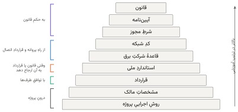
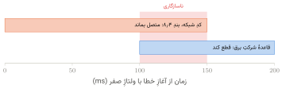
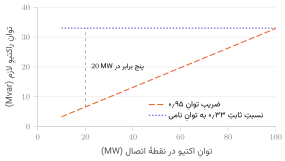
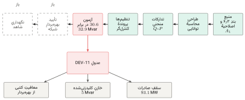
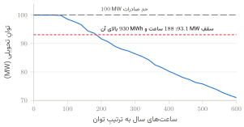
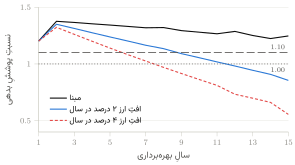

54 شناساییِ الزاماتِ حاکم بر پروژه
54.1 نقشهٔ فصل
پس از این فصل، خواننده میتواند:
- قانون، آییننامه، مجوز، کدِ شبکه، قاعدهٔ شرکتِ برق، استانداردِ ملی، قرارداد و مشخصاتِ مالک را از هم جدا کند و بگوید هر کدام از چه راهی پروژه را مقید میکند.
- برای ولتاژ، مالکیت و محلِ واقعیِ پروژه، مرجعها و الزامهایی را که بهراستی حاکماند بیابد و کاربردپذیریِ هر کدام را ثبت کند.
- منبعِ رسمی، ویرایش، اصلاحیهها، زبانِ رسمی و وضعیتِ حقوقیِ هر الزام را وارسی کند و تاریخِ وارسی را نگه دارد.
- ناسازگاریها، تفسیرها، شاهدِ لازم، مسئولِ تأیید و تاریخچهٔ بازنگری را در یک دفترِ انطباقِ زنده ثبت کند و ابهام را با استعلامِ کتبی ببندد.
- یک الزامِ فرضیِ اتصال به شبکه را از منبع تا طراحی، تدارکات، آزمون، بازبین و بستن ردیابی کند.
- منابعِ مالی و مالیاتی (مالیات، مشوق، ارز، انتقالِ وجوه، مالکیت، وثیقه، وام و بیمه) را با منبعِ رسمی و بازبینِ صلاحیتدارِ محلی وارسی کند و موردِ وارسینشده را وارد حالتِ مبنا نکند.
پیشنیازها: ارزیابیِ پروژه و دروازههای تصمیم (فصل 22) و مهندسیِ تفصیلی و کنترلِ مدارک (فصل 38). دفترِ الزاماتِ فصلِ ۱۷ (بخش 17.4) و مدلِ مالیِ فصلِ ۲۱ (فصل 21) هم به کار میآیند.
- اگر قراردادِ خرید حدِ نوفهٔ شبانه را 48 dB(A) و مجوزِ محیطی 40 dB(A) بگذارد، طراحی به کدام عدد کار میکند؟
- چرا خواندنِ متنِ پایهٔ یک کدِ شبکه بی اصلاحیههایش کافی نیست؟
- ترجمهٔ یک قاعده «باید» را «بهتر است» نوشته است. کدام متن تصمیم میگیرد؟
- چرا مشوقی که هنوز آییننامهاش تصویب نشده نباید در حالتِ مبنای مدلِ مالی باشد؟
پاسخها: (۱) 40، چون همهٔ منابع با هم اعمال میشوند و سختگیرترین حاکم است؛ (۲) چون متنِ حاکم متنِ تلفیقیِ پایه و اصلاحیههاست؛ (۳) متنِ رسمی؛ (۴) چون اگر نیاید، بدهیِ اندازهشده بر پایهٔ آن بیپشتوانه میماند. اگر دو پرسش یا بیشتر را نتوانستید، بخش 17.4، بخش 38.3 و بخش 21.7.4 را مرور کنید.
جایگاهِ این فصل در نیروگاهِ P. نیروگاه در مرحلهٔ طراحی است و تاریخِ فصل 2027-03-01 است (آموزشی). این فصل روش را روی یک کشورِ ساختگی با نامِ «کشورِ Z» یاد میدهد: مرجعها، سندها، ویرایشها و عددهای آن همه ساختگیاند (A-546 تا A-551). این انتخاب عمدی است: روش بی آنکه الزامِ کشوری واقعی را از حافظه بیان کند آموخته میشود. فصلهای ۵۵ تا ۵۷ همین روش را با پژوهشِ زنده روی منابعِ رسمیِ ایران، افغانستان و تاجیکستان به کار میبرند و فصلِ ۵۸ استانداردهای بینالمللی را. نتیجهٔ این فصل مبنای D-058 است.
همهٔ الزامها، مرجعها و عددهای کشورِ Z ساختگیاند و هیچکدام بیانِ قاعدهٔ کشوری واقعی نیست. این فصل مشاورهٔ حقوقی، مالیاتی یا مالی نمیدهد: ترتیبِ منابع یک ترتیبِ آموزشی است و ترتیبِ واقعی و استثناهایش پرسشی حقوقی برای هر کشور است. هر نتیجهٔ حقوقی، مالیاتی یا مالی را بازبینِ صلاحیتدارِ محلی با نظرِ کتبیِ تاریخدار میدهد.
54.2 الف. سلسلهمراتبِ الزامها
هر عددی که طراحِ نیروگاه به کار میبرد از جایی آمده است: قانونی که پروانهٔ تولید را لازم میکند، آییننامهای که آستانهاش را میگذارد، مجوزِ محیطیای که حدِ نوفه را شرط کرده، کدِ شبکهای که ضریبِ توان را میخواهد، قراردادی که چیزی بیش از آن را خواسته و مشخصاتِ مالکی که حاشیهای افزوده است. الزام (به انگلیسی requirement) جملهای است که پروژه باید برآوردش کند. این بخش نشان میدهد این منابع چگونه کنار هم مینشینند، کجا با هم ناسازگارند و هر متن چه نوع جملهای است (بخش 17.4.9).
54.2.1 گونههای منبع و راهِ مقیدکردن
ایده. همهٔ منابع به یک شکل پروژه را مقید نمیکنند. قانون (به انگلیسی law)، آییننامه (regulation) و شرطِ مجوز (permit condition) به حکمِ قانون لازماند. کدِ شبکه (grid code) و قاعدهٔ شرکتِ برق (utility rule) معمولاً از راهِ پروانه و قراردادِ اتصال به پروژه میرسند. استانداردِ ملی وقتی لازم است که قانون، مجوز یا قرارداد به آن ارجاع دهد. قرارداد با توافقِ طرفها و مشخصاتِ مالک (owner’s specification) و روشِ اجراییِ پروژه فقط درونِ پروژه. شکل 54.1 این ترتیبِ آموزشی را نشان میدهد.

RANK = {"law": 1, "regulation": 2, "permit condition": 3, "grid code": 4,
"utility rule": 5, "national standard": 6, "contract": 7,
"owner specification": 8, "project procedure": 9}
STATUSES = ("verified", "project-dependent", "to-confirm")
def rank(source_type: str) -> int:
"""Lower is higher in the hierarchy (teaching order; the real order
and any exceptions are a legal question for the jurisdiction)."""
return RANK[source_type]the project's register by source type, highest first (fictional Country Z)
1. law Z-013
2. regulation Z-007, Z-011, Z-014
3. permit condition Z-006
4. grid code Z-001, Z-004, Z-009
5. utility rule Z-005, Z-010
6. national standard Z-012
7. contract Z-002, Z-008
8. owner specification Z-003
law, regulations and permits bind by law; grid code and
utility rules by the licence and the connection; contracts by
agreement; the owner's specification only the project - the
order is a teaching order, the real one a legal questionمثال 54.1 (چهارده سطرِ دفتر در هشت گونه) پرسش. دفترِ نیروگاهِ P در کشورِ Z چند گونه منبع دارد و هر سطر از کدام است؟
پاسخ. هشت گونه: یک قانون (Z-013)، سه آییننامه، یک شرطِ مجوز، سه سطر از کدِ شبکه، دو قاعدهٔ شرکتِ برق، یک استانداردِ ملی، دو قرارداد و یک سطر از مشخصاتِ مالک.
بررسیِ معقولبودن. جمعِ سطرها 1 + 3 + 1 + 3 + 2 + 1 + 2 + 1 = 14 است، برابر با شمارِ سطرهای دفتر.
تفسیر. گونهٔ منبع ستونی از دفتر است، نه یادداشتی در حاشیه: از آن پیداست چه کسی میتواند الزام را تغییر دهد، چه کسی از آن معافیت میدهد و اگر رعایت نشود پیامدش چیست. ترتیبِ عددیِ تابعِ rank آموزشی است. در کشورِ واقعی، رابطهٔ قانون و آییننامه و قرارداد را حقوقدانِ محلی تعیین میکند.
54.2.2 ناسازگاری روی یک پارامتر
ایده. چند منبع اغلب دربارهٔ یک پارامتر حرف میزنند. اگر یکی کمینه و دیگری بیشینه بگذارد، گسترهٔ مجاز اشتراکِ آنهاست: بزرگترینِ کمینهها تا کوچکترینِ بیشینهها. اگر این گستره تهی باشد، هیچ طراحیای هر دو را برآورده نمیکند و ناسازگاری پیش آمده است.
def conflicts(reqs: list[dict], parameter: str) -> dict:
"""reqs: dicts with id, source_type, parameter, kind ('min'/'max'/
'equal'), value. Returns the governing value for each kind - the
strictest that every source allows - and the pairs that disagree."""
rows = [r for r in reqs if r["parameter"] == parameter]
mins = [r["value"] for r in rows if r["kind"] == "min"]
maxs = [r["value"] for r in rows if r["kind"] == "max"]
eqs = {r["value"] for r in rows if r["kind"] == "equal"}
lo = max(mins) if mins else None
hi = min(maxs) if maxs else None
feasible = lo is None or hi is None or lo <= hi
if eqs:
feasible = feasible and len(eqs) == 1 and all(
(lo is None or v >= lo) and (hi is None or v <= hi) for v in eqs)
return dict(lo=lo, hi=hi, equal=sorted(eqs), feasible=feasible,
sources=[r["id"] for r in rows])one parameter, several sources: the range every source allows
parameter min max result sources
power factor at POC 0.95 - ok Z-001,Z-002,Z-003
ramp rate - 8 ok Z-004,Z-005
night noise at dwellings - 40 ok Z-006,Z-007,Z-008
ride-through at 0 pu 150 100 CONFLICT Z-009,Z-010
conflicts: ride-through at 0 pu - no design satisfies both; the
answer is a written clarification (CQ-01), not an engineer's
choice of the convenient source
مثال 54.2 (گسترهٔ تهی) پرسش. کدام پارامتر گسترهٔ مجازِ تهی دارد و پاسخِ درست به آن چیست؟
پاسخ. گذر از خطا در ولتاژِ صفر: کمینهٔ 150 ms از کدِ شبکه و بیشینهٔ 100 ms از قاعدهٔ شرکتِ برق (شکل 54.2). سه پارامترِ دیگر گسترهٔ ناتهی دارند: ضریبِ توان دستکم 0.95، شیبِ تغییرِ توان حداکثر 8 %/min و نوفهٔ شبانه حداکثر 40 dB(A).
تفسیر. مهندس منبعِ «راحتتر» را برنمیگزیند. پاسخ استعلامِ کتبی به همان مرجعی است که هر دو سند را صادر کرده (CQ-01). تا پاسخ برسد، الزام «نیازمندِ تأیید» میماند و تنظیمهای حفاظتی که به آن وابستهاند صادر نمیشوند (بخش 54.5.2).
54.2.3 سختگیرترین منبع حاکم است
night noise at dwellings in three sources (dB(A))
Z-006 permit condition 40
Z-007 regulation 45
Z-008 contract 48
governing: 40 dB(A), the permit's - all three apply at once,
so the design meets the strictest; the PPA's 48 does not loosen
the permit, and meeting 40 also meets the regulation's 45.
Rank decides only when sources cannot all be met together
(ch 33 noise model works to 40)مثال 54.3 (قرارداد مجوز را سست نمیکند) پرسش. حدِ نوفهٔ شبانه در سه منبع 40، 45 و 48 dB(A) است. طراحی به کدام کار میکند و رتبهٔ منبع کجا به کار میآید؟
پاسخ. 40 dB(A)، عددِ مجوز. هر سه با هم اعمال میشوند و برآوردنِ 40 هر سه را برمیآورد.
تفسیر. رتبه فقط وقتی به کار میآید که برآوردنِ همه با هم ممکن نباشد (مثال 54.2). قراردادِ خرید با 48 مجوز را سست نمیکند و آییننامه با 45 با برآوردنِ مجوز برآورده میشود. عکسِ آن هم درست است: اگر قراردادی سختتر از قانون باشد، طرفی که آن را پذیرفته به آن مقید است. مدلِ نوفهٔ فصلِ ۳۳ به همین دلیل با 40 کار میکرد (فصل 33).
54.2.4 متن چه نوع جملهای است
ایده. در یک سند همهٔ جملهها الزام نیستند. متنِ الزامی (normative) با «باید» الزام میگذارد. «بهتر است» توصیه است، «میتواند» اجازه، «خواهد» بیانِ واقعیت. یادداشت، مثال و پیوستِ آگاهیبخش (informative) کمک به فهماند و الزام نمیگذارند. پیوستی که خودش را الزامی میخوانَد الزام میگذارد. شیوهٔ نوشتنِ الزامِ خوب در بخش 38.3.5 آمده است. اینجا متنِ دیگران خوانده میشود.
12 pieces of one grid-code extract, by kind
normative 5
note 1
recommendation 1
permission 1
example 1
informative annex 1
normative annex 1
statement 1
binding (normative text and normative annex): 6 of 12
normative but vague: 7.2, 9.1 ('as appropriate',
'adequate') - binding words with no number: each needs a
written interpretation before design can verify itمثال 54.4 (نیمی الزام، نیمی کمک) پرسش. از دوازده تکهٔ این برگزیده چند تا الزام میگذارند و کدام الزامها عدد ندارند؟
پاسخ. شش: پنج بندِ الزامی و یک پیوستِ الزامی. دو بندِ الزامی واژهٔ مبهم دارند: بندِ 7.2 با «در حدِ مناسب» و 9.1 با «دقتِ کافی».
تفسیر. الزامِ بیعدد را طراحی نمیتواند راستیآزمایی کند (بخش 17.4.2). برای هر کدام تفسیری کتبی لازم است: «دقتِ کافی» یعنی چه کلاسِ دقتی، «در حدِ مناسب» یعنی چه شیبی در طوفان. یادداشتِ ۱ بندِ 6.2 الزام نیست، ولی نشان میدهد نقطهٔ اندازهگیری را میتوان با بهرهبردار توافق کرد. همین یادداشت در تفسیرِ INT-01 به کار رفته است (بخش 54.4.4).
54.2.5 یک ایده، سه شکل
ایده. یک الزامِ توانِ راکتیو را میتوان چند جور نوشت. ضریبِ توانِ ثابت توانِ راکتیوی میخواهد که با توانِ اکتیو بالا میرود:
\[ Q_\text{req} = P \tan\varphi, \qquad \tan\varphi = \frac{\sqrt{1-\cos^2\varphi}}{\cos\varphi}. \tag{54.1}\]
نسبتِ ثابتِ توانِ راکتیو به توانِ نامی در هر توانِ اکتیو یک عددِ ثابت میخواهد. عددِ سرِ تیتر یکی است. شکلِ الزام نیست.
the same 'reactive requirement' written three ways
pf 0.95 at the POC -> Q = P x 0.329 (follows P)
tan phi 0.33 -> Q = P x 0.33 (the same, rounded)
Q/Pmax 0.33 -> Q = 33 Mvar at every P
P (MW) pf 0.95 Q/Pmax 0.33
10 3.3 33.0
20 6.6 33.0
50 16.4 33.0
80 26.3 33.0
100 32.9 33.0
at 20 MW the two readings differ 5.0 times: the form
of the requirement, not its headline number, sets the
design case (ch 28 used the Q/Pmax form as a placeholder)
مثال 54.5 (عددِ یکسان، طراحیِ متفاوت) پرسش. در 20 MW دو خوانش چقدر فرق دارند؟
پاسخ. ضریبِ توانِ 0.95 با معادلهٔ 54.1 فقط \(20 \times 0.329 = 6.6\,\text{Mvar}\) میخواهد و نسبتِ ثابتِ 0.33 همان 33 Mvar، یعنی پنج برابر.
تفسیر. فصلِ ۲۸ برای الزامِ REQ-G01 یک جاینگهدارِ ثابت گذاشته بود (±33 Mvar در هر توان؛ بخش 28.3.3). متنِ کشورِ Z ضریبِ توان است. پس حالتِ طراحی در توانِ کم سبکتر و در توانِ کامل همان است. شکلِ الزام را باید از متنِ رسمی خواند، نه از عددِ سرِ تیتر.
54.2.6 کدام ویرایش حاکم است
ایده. کدِ شبکه ویرایشهای پیاپی و اصلاحیه (amendment) دارد. متنِ حاکم در یک تاریخ متنِ تلفیقی (consolidated text) است: پایه بهعلاوهٔ هر اصلاحیهای که تا آن تاریخ لازمالاجرا شده است. حکمِ انتقالی (transitional provision) میگوید کدام تاریخ متن را برای یک پروژه ثابت میکند: تاریخِ درخواست، تاریخِ قرارداد یا تاریخِ برقدارکردن.
def consolidated(clauses: dict, on: date) -> dict:
"""clauses: clause -> list of (in force from, issue, text), any order.
Returns clause -> (issue, text) in force on the date: the base text
with every amendment in force by then - never the base alone."""
out = {}
for cl, versions in clauses.items():
live = [v for v in versions if v[0] <= on]
if live:
d, issue, text = max(live, key=lambda v: v[0])
out[cl] = (issue, text)
return outGCZ text in force on the filing date 2026-05-10 and on first
energisation 2028-03-01 (base 2024 + amendments)
6.2: filing A1 pf 0.95 at the POC from 10 to 100 % of rated P
energise A1 pf 0.95 at the POC from 10 to 100 % of rated P
7.1: filing 2024 ramp at most 10 %/min of rated P
energise A2 ramp at most 8 %/min above 50 MW
8.4: filing 2024 stay connected 150 ms at 0 pu retained voltage
energise 2024 stay connected 150 ms at 0 pu retained voltage
9.3: filing - not yet in force
energise A2 4-second telemetry of P, Q, U at the POC
clauses that differ between the two readings: 7.1, 9.3
the transitional clause does not say which date fixes the
text - CQ-04 asks it; meanwhile the design takes the
stricter text where it is cheap (8 %/min is a setting) and
records where it is not (4-second telemetry is a contract)مثال 54.6 (دو تاریخ، دو متن) پرسش. متنِ تلفیقیِ کدِ شبکه در تاریخِ درخواستِ اتصال (2026-05-10) و در تاریخِ برقدارکردن (2028-03-01) در کدام بندها فرق دارد؟
پاسخ. در دو بند. بندِ 7.1 در تاریخِ درخواست 10 %/min است و پس از اصلاحیهٔ A2 8 %/min. بندِ 9.3 (دورسنجیِ چهارثانیهای) در تاریخِ درخواست هنوز وجود ندارد. بندِ 6.2 در هر دو تاریخ متنِ اصلاحیهٔ A1 است، که گسترهٔ ضریبِ توان را تا ۱۰ درصدِ توانِ نامی پایین آورده است.
تفسیر. حکمِ انتقالی نمیگوید کدام تاریخ متن را ثابت میکند و همین پرسشِ CQ-04 است. تا پاسخ برسد، طراحی هر جا که ارزان است متنِ سختتر را میگیرد (شیبِ 8 %/min یک تنظیم است). هر جا که گران است، تصمیم را ثبت میکند (دورسنجیِ چهارثانیهای قرارداد و سختافزار است).
- کدام گونههای منبع به حکمِ قانون لازماند و کدام از راهِ پروانه و قرارداد؟
- استانداردِ ملی کِی برای پروژه لازم میشود؟
- گسترهٔ مجازِ یک پارامتر از چند منبع چگونه به دست میآید؟
- چرا رتبهٔ منبع فقط در ناسازگاری به کار میآید؟
- قراردادی که حدِ نوفه را سستتر از مجوز بنویسد چه اثری دارد؟
- «باید»، «بهتر است» و «میتواند» را از هم جدا کنید.
- چرا الزامِ الزامیِ بیعدد تفسیرِ کتبی لازم دارد؟
- ضریبِ توانِ 0.95 و نسبتِ ثابتِ 0.33 در 50 MW چه توانِ راکتیوی میخواهند؟
- متنِ تلفیقی چیست و چرا متنِ پایه کافی نیست؟
- شکل 54.2 و شکل 54.3 را بخوانید.
54.3 ب. روشِ جستوجو و کاربردپذیری
پیش از آنکه الزامی در دفتر بنشیند باید سه چیز روشن باشد: چه کسی دربارهٔ آن موضوع تصمیم میگیرد، آیا الزام به این پروژه با این ولتاژ و این مالکیت و این محل میخورد، و متنی که خوانده شده متنِ رسمی و جاریِ همان مرجع است یا نه. این بخش این سه وارسی را با سابقهٔ جستوجو و پایشِ مقررات کامل میکند.
54.3.1 نقشهٔ مرجعها
ایده. برای هر موضوعِ پروژه (پروانهٔ تولید، اتصال، محیطزیست، ساخت، زمین، آب، هوانوردی، میراث، کار و ایمنی، آتشنشانی، حملِ بارِ ترافیکی، رادیو، مالیات و ارز) یک مرجع نام برده میشود، با سطحِ آن (ملی، استانی، محلی) و وضعیتِ شناسایی. مرجعِ مسئول (authority having jurisdiction) همان است که فصلِ ۳۲ برای آتش به کار برد (فصل 32).
who decides what for Plant P (14 topics, fictional)
generation licence national verified
ERZ
grid connection and studies national verified
TSOZ
environmental permit national verified
Environment Agency of Z
construction permit provincial verified
Province Q building office
land lease and access provincial verified
Province Q land office
water abstraction regional to-confirm
basin authority (which one?)
aviation obstacle national verified
Civil Aviation Authority of Z
cultural heritage national project-dependent
Heritage Office of Z
labour and safety national verified
Labour Inspectorate
fire and emergency provincial to-confirm
Province Q fire service (or national?)
transport of abnormal loads national verified
Roads Agency
telecommunications (radio links) national to-confirm
(not identified)
tax registration and incentives national project-dependent
Revenue Office of Z
foreign exchange and repatriation national to-confirm
Central Bank of Z
verified 8, project-dependent 2, to-confirm 4
open: 6 topics - an unidentified authority is an
approval nobody has asked for yetمثال 54.7 (موضوعی که کسی هنوز برایش درخواست نداده) پرسش. از چهارده موضوع، مرجعِ چند تا تأییدشده است و کدامها باز ماندهاند؟
پاسخ. هشت تأییدشده، دو وابسته به پروژه (میراث و مالیات) و چهار نیازمندِ تأیید: آب، آتشنشانی، رادیو و ارز. مرجعِ رادیو هنوز نام هم ندارد.
تفسیر. مرجعی که شناخته نشده یعنی تأییدی که هنوز کسی برایش درخواست نداده است. در کشورِ Z معلوم نیست برداشتِ آب با کدام نهادِ حوضه است و آتشنشانی استانی است یا ملی. این دو پرسش پیش از برنامهٔ ساخت پاسخ میخواهند (فصل 29، فصل 32). سطحِ «وابسته به پروژه» یعنی مرجع معلوم است ولی اینکه کارش به این پروژه میکشد یا نه به یافتهها بستگی دارد، مثلاً یافتهٔ اتفاقیِ باستانی.
54.3.2 کاربردپذیری با ولتاژ، مالکیت و محل
ایده. هر الزام گسترهٔ کاربرد دارد: از چه ولتاژی، برای چه مالکی، در کجا و برای چه فناوریای. کاربردپذیری (applicability) برای هر سطر وارسی و دلیلش ثبت میشود، چه الزام بخورد و چه نخورد.
def applies(req: dict, project: dict) -> bool:
"""A requirement applies when the project's voltage, ownership,
location and technology fall inside its stated scope (None = any)."""
s = req.get("scope", {})
v = project["voltage_kv"]
if s.get("v_min") is not None and v < s["v_min"]:
return False
if s.get("v_max") is not None and v > s["v_max"]:
return False
for key in ("ownership", "location", "technology"):
allowed = s.get(key)
if allowed and project[key] not in allowed:
return False
return TruePlant P: 132 kV, private, Province Q, hybrid
requirements that apply: 13; outside the scope: Z-011
Z-011 is a distribution rule for 33 kV and below: it would
apply to a collector connected to the distribution network,
not to a 132 kV transmission connection - applicability is
decided by voltage, ownership and location, and recordedمثال 54.8 (قاعدهای که به این پروژه نمیخورد) پرسش. کدام الزام به نیروگاهِ P با اتصالِ 132 kV نمیخورد و چرا؟
پاسخ. فقط Z-011، قاعدهٔ سوسوی شبکهٔ توزیع برای 33 kV و پایینتر. سیزده الزامِ دیگر میخورند.
تفسیر. «نمیخورد» هم یک یافته است و با دلیلش ثبت میشود. اگر بعدها بخشی از نیروگاه، مثلاً یک فیدرِ کمکی، به شبکهٔ توزیع وصل شود، همین سطر دوباره باز میشود. سطری که بیدلیل پاک شود در پذیرش دوباره سر برمیآورد.
54.3.3 مالکیتِ خط آنچه را حاکم است تغییر میدهد
ایده. مسیرِ صادرات و خطِ 132 kV را ممکن است شرکتِ برق بسازد و نگه دارد، نیروگاه بسازد و به شرکتِ برق واگذار کند، یا نیروگاه بسازد و تا پایان نگه دارد (بخش 18.7.4). هر سناریو الزامهای تازهای به دفتر میافزاید.
requirements added by who builds and owns the 132 kV line
O1 utility builds and owns the line +0
O2 plant builds, transfers at COD +4
O3 plant builds and owns for life +7
under O3 the plant takes on:
- line design to TSOZ standard
- TSOZ witness of line tests
- right-of-way under the transmission law
- transmission licence or exemption
- line maintenance and patrol obligations
- third-party connection to the line
- line decommissioning at the end
the ownership scenario is an input to the register, decided
before the search, not found out at the line's handoverمثال 54.9 (سناریو پیش از جستوجو) پرسش. اگر نیروگاه خط را بسازد و تا پایان نگه دارد، چند الزام افزوده میشود؟
پاسخ. هفت: طراحی به استانداردِ بهرهبردارِ شبکه، آزمونِ خط با حضورِ بهرهبردار، حقِ عبور طبقِ قانونِ انتقال، پروانهٔ انتقال یا معافیت از آن، تکلیفهای نگهداری و گشتزنی، اتصالِ اشخاصِ ثالث به خط و برچیدنِ خط در پایان. در واگذاری پس از بهرهبرداری چهار الزام افزوده میشود.
تفسیر. سناریوی مالکیت ورودیِ دفتر است و پیش از جستوجو تصمیم گرفته میشود. در حالتِ مبنا نیروگاهِ P سناریوی O1 است (A-547). اگر سناریو بعداً عوض شود، دفتر هفت سطر میگیرد که هر کدام مرجع، شاهد و هزینه دارد. این کشف نباید در روزِ تحویلِ خط رخ دهد (فصل 59).
54.3.4 تازگیِ منبع
ایده. هر الزام سه وارسیِ منبع دارد. آخرین بار کِی خوانده شده؟ ویرایشی که خوانده شده همان ویرایشِ جاری است؟ منبعِ رسمیاش معلوم است؟ این فصل یک سال را حدِ تازگی میگیرد (آموزشی).
def freshness(req: dict, today: date, max_days: int,
current_edition: dict) -> list:
"""Problems with a requirement's source: verified too long ago, an
edition other than the current one, or no official source."""
out = []
last = req.get("verified")
if last is None or (today - last).days > max_days:
out.append("verification stale")
cur = current_edition.get(req["document"])
if cur is not None and req.get("edition") != cur:
out.append(f"edition {req.get('edition')} superseded by {cur}")
if not req.get("official_source"):
out.append("no official source")
return outsource checks on 2027-03-01: checked within 365 days, current edition,
official source
Z-004: verification stale; edition 2019 superseded by 2024
Z-011: verification stale; no official source
Z-012: verification stale; edition 2016 superseded by 2020
3 of 14 requirements need work: the ramp rate was
copied from the 2019 grid code (a later edition exists), the
transformer standard is an older edition, and one rule has
no official source - a requirement is only as current as
its last checkمثال 54.10 (الزامی که از ویرایشِ کهنه رونویسی شد) پرسش. چند الزام کار لازم دارند و ایرادِ هر کدام چیست؟
پاسخ. سه از چهارده. شیبِ تغییرِ توان (Z-004) از کدِ شبکهٔ ۲۰۱۹ رونویسی شده، در حالی که ویرایشِ ۲۰۲۴ جاری است. استانداردِ ترانسفورماتور (Z-012) ویرایشِ ۲۰۱۶ است و ۲۰۲۰ جاری است. Z-011 منبعِ رسمی ندارد. هر سه بیش از یک سال است که خوانده نشدهاند.
تفسیر. وضعیتِ Z-004 و Z-012 در دفتر «تأییدشده» است ولی منبعشان کهنه است. «تأییدشده» یعنی در تاریخِ وارسی تأیید شده است، نه برای همیشه. هر الزام همانقدر تازه است که آخرین وارسیاش.
54.3.5 زبانِ رسمیِ متن
ایده. متنِ رسمی به زبانِ رسمی کشور منتشر میشود. ترجمه کمکِ خواندن است و تصمیم نمیگیرد. هر جا طراحی به یک بند وابسته است، خوانندهای صلاحیتدار متنِ رسمی را میخوانَد.
documents read in their official language, or only in translation
GCZ official yes translation yes
TCR official NO translation yes
translation 'should' where the official text says 'shall'
EP-117 official yes translation no
GLR official NO translation yes
translation omits a footnote on hybrid plants
CA-P official yes translation no
read only in translation: TCR, GLR - a translation is a
reading aid; the official text decides, and a qualified
reader confirms the clauses the design depends onمثال 54.11 («بهتر است» به جای «باید») پرسش. کدام سندها فقط در ترجمه خوانده شدهاند و ترجمه چه چیزی را عوض کرده است؟
پاسخ. دو سند: قاعدهٔ شرکتِ برق، که ترجمهاش «بهتر است» نوشته در حالی که متنِ رسمی «باید» است، و آییننامه، که ترجمهاش پانوشتی دربارهٔ نیروگاههای هیبریدی را جا انداخته است.
تفسیر. یک واژه توصیه را الزام میکند (بخش 54.2.4) و یک پانوشت میتواند همهٔ نیروگاههای هیبریدی را از یا به گسترهٔ یک بند ببرد. این دو سند پیش از هر تصمیمِ طراحی به زبانِ رسمی خوانده میشوند و نامِ خواننده و تاریخ در سابقهٔ جستوجو مینشیند.
54.3.6 سابقهٔ جستوجو
ایده. برای هر الزام یک سابقهٔ جستوجو (research record) نگه داشته میشود: مرجعِ رسمی (مثلاً شمارهٔ روزنامهٔ رسمی یا نشانیِ وبگاهِ مرجع)، تاریخِ دسترسی، کسی که خوانده و کسی که دوباره وارسی کرده است.
research record of each requirement: official reference, date
accessed, who read it, who checked it
official_ref 88% filled
accessed 88% filled
verifier 100% filled
second_check 50% filled
cells filled 81%; records with all four: 4 of 8
weak records: Z-004, Z-010, Z-011, Z-014
Z-011 rests on a consultant's slide - not a source; Z-004
was read once, from an edition since replacedمثال 54.12 (اسلایدِ مشاور منبع نیست) پرسش. چند سابقه هر چهار ستون را دارند و کدامها ضعیفاند؟
پاسخ. چهار از هشت. خانههای پرشده 81 % است. ضعیفها Z-004، Z-010، Z-011 و Z-014 هستند: سه تا وارسیِ دوم ندارند و Z-011 بر اسلایدِ یک مشاور تکیه دارد.
تفسیر. نشانیِ رسمی و تاریخ نشان میدهند متن از کجا آمده. وارسیِ دوم جلوی خطای یک نفره را میگیرد، مانندِ ویرایشِ کهنهٔ Z-004. اسلاید، ایمیل یا گفتوگو میتواند نقطهٔ آغازِ جستوجو باشد، ولی جای منبعِ رسمی را نمیگیرد.
54.3.7 پایشِ مقررات
ایده. قاعدهها در طولِ پروژه عوض میشوند. اگر تغییرها با نرخِ \(\lambda_\text{r}\) در سال رخ دهند (فرضِ پواسون)، احتمالِ دستکم یک تغییر در \(t\) سال این است:
\[ \Pr(N \ge 1) = 1 - e^{-\lambda_\text{r} t}. \tag{54.2}\]
grid documents changed 4 times in 8.0 years: 0.50 a year
chance of at least one change before first energisation (1.0 yr): 39%
before commercial operation (1.5 yr): 53%
expected changes over a 25-year life: 12
a Poisson rate from four events is rough; the point stands:
someone checks the official sources on a fixed day each
month and records 'no change' tooمثال 54.13 (نیمی از پروژهها پیش از بهرهبرداری تغییری میبینند) پرسش. با چهار تغییر در هشت سال، احتمالِ دستکم یک تغییر پیش از برقدارکردن و پیش از بهرهبرداریِ تجاری چیست؟
پاسخ. نرخ 0.50 در سال است. با معادلهٔ 54.2، احتمالِ تغییر در یک سالِ مانده تا برقدارکردن \(1 - e^{-0.5} = 39\,\%\) و در یکونیم سالِ مانده تا بهرهبرداری 53 % است. در عمرِ ۲۵ساله حدودِ ۱۲ تغییر انتظار میرود.
تفسیر. نرخی که از چهار رویداد برآورد شود ناهموار است، ولی نتیجه سر جایش میماند. پایشِ مقررات (regulatory watch) کارِ یک نفرِ نامبرده در روزی ثابت از هر ماه است و نتیجهٔ «تغییری نبود» هم ثبت میشود. هر تغییر به ارزیابیِ اثرِ ویرایش میرود (بخش 54.4.7).
- نقشهٔ مرجعها برای هر موضوع چه ستونهایی دارد؟
- چرا مرجعِ شناختهنشده خطرِ برنامهٔ زمانی است؟
- کاربردپذیری با کدام ویژگیهای پروژه سنجیده میشود؟
- چرا «نمیخورد» هم با دلیل ثبت میشود؟
- اگر نیروگاه خطِ صادرات را تا پایان نگه دارد، چه الزامهایی افزوده میشود؟
- سه وارسیِ تازگیِ منبع را نام ببرید.
- چرا وضعیتِ «تأییدشده» تاریخ دارد؟
- ترجمه کجا کمک است و کجا خطر؟
- سابقهٔ جستوجو چه ستونهایی دارد و چرا وارسیِ دوم؟
- با نرخِ 0.5 تغییر در سال، احتمالِ دستکم یک تغییر در دو سال چیست؟
54.4 پ. مدیریتِ شاهدِ انطباق
الزامی که یافته و وارسی شد هنوز «برآورده» نیست. باید روشن باشد در طراحی چه پیامدی دارد، چه شاهدی برآوردنش را نشان میدهد، چه کسی آن شاهد را آماده میکند، چه کسی بازبینی میکند و چه کسی تأیید. ابهامها با استعلامِ کتبی و تفسیرهای ثبتشده بسته میشوند و هر بازنگری ردِ خود را میگذارد. ابزارِ این کار دفترِ انطباق (compliance register) است: ادامهٔ دفترِ الزاماتِ فصلِ ۱۷ و ماتریسِ الزام تا راستیآزماییِ فصلِ ۳۸ (بخش 17.4.6، بخش 38.3.2).
54.4.1 ستونهای دفتر
ایده. هر سطر یک الزام است با این ستونها: بند، ویرایش، وضعیت، کاربردپذیری، پیامدِ طراحی، شاهد، صاحب، تأییدکننده، تاریخِ وارسی و شمارهٔ بازنگری.
the register's columns, filled share over six requirements
clause 83%
edition 100%
status 100%
applicability 83%
consequence 83%
evidence 67%
owner 83%
approver 67%
verified 83%
revision 100%
cells filled 85%; complete rows: 3 of 6 (Z-001, Z-006, Z-013)
emptiest column: evidence - a requirement without
evidence or approver is a claim, not complianceمثال 54.14 (الزامِ بیشاهد ادعاست) پرسش. چند سطر کاملاند و کدام ستون خالیتر از همه است؟
پاسخ. سه از شش سطر (Z-001، Z-006 و Z-013). 85 % خانهها پر است. خالیترین ستون شاهد است با 67 %. ستونِ تأییدکننده هم 67 % است.
تفسیر. الزامی که شاهد یا تأییدکننده ندارد ادعاست، نه انطباق. Z-011 تقریباً خالی است و همین با یافتهٔ «نمیخورد» (مثال 54.8) سازگار است: این سطر باید با دلیلش بسته شود، نه نیمهپر بماند.
54.4.2 سه وضعیت
register status (verified / project-dependent / to-confirm)
verified 10
project-dependent 2
to-confirm 2
verified: the official text was read and its applicability
recorded; project-dependent: the value comes from a document
still being negotiated (CA-P draft 3); to-confirm: an open
question with a request behind it - never silently assumedمثال 54.15 («تأییدشده»، «وابسته به پروژه»، «نیازمندِ تأیید») پرسش. دفتر در تاریخِ فصل چه وضعیتی دارد؟
پاسخ. ده تأییدشده، دو وابسته به پروژه (Z-002 از پیشنویسِ ۳ قراردادِ اتصال و Z-014) و دو نیازمندِ تأیید (Z-010 و Z-011).
تفسیر. این سه برچسب در فصلهای ۵۵ تا ۵۷ برای هر جملهٔ کشوری به کار میروند. تأییدشده یعنی متنِ رسمی خوانده و کاربردپذیریاش ثبت شده است. وابسته به پروژه یعنی عدد از سندی میآید که هنوز در مذاکره است یا به یافتههای پروژه بستگی دارد. نیازمندِ تأیید یعنی پرسشی باز با یک استعلام پشتش. هیچکدام بیصدا فرض نمیشود.
54.4.3 چه کسی آماده میکند، بازبینی میکند، تأیید میکند
ایده. شاهدِ هر الزام را کسی آماده میکند، دیگری بازبینی میکند و مرجعِ نامبرده تأیید میکند. بازبینیای که آمادهکننده انجام دهد چشمِ مستقل ندارد و الزامِ بیتأییدکننده هیچوقت بسته نمیشود (مرجعیتِ تأیید، فصل 1).
preparer, reviewer and approver of six requirements
Z-001: EPC grid engineer / owner's engineer / TSOZ
Z-004: EPC controls engineer / EPC controls engineer / TSOZ
Z-006: env. consultant / owner's env. lead / Environment Agency
Z-009: converter maker / owner's engineer / -
Z-012: transformer maker / owner's engineer / owner's engineer
Z-013: permitting lead / local counsel / ERZ
problems:
Z-004: reviewer is the preparer
Z-009: no approver named
Z-012: owner's engineer approves a requirement it reviews
Z-012 may be fine if the owner is the approver by contract;
Z-004 and Z-009 are not: no independent eye, no named approverمثال 54.16 (چشمِ مستقل و نامِ تأییدکننده) پرسش. کدام سطرها ایراد دارند؟
پاسخ. سه سطر. در Z-004 بازبین همان آمادهکننده است. Z-009 تأییدکنندهٔ نامبرده ندارد. در Z-012 مهندسِ مالک هم بازبین است و هم تأییدکننده.
تفسیر. Z-012 اگر قرارداد مالک را تأییدکننده بداند پذیرفتنی است، به شرطِ آنکه این در دفتر نوشته شود. Z-004 و Z-009 پذیرفتنی نیستند: برای شیبِ تغییرِ توان چشمِ دومی نیست و برای گذر از خطا کسی نیست که بگوید «بسته شد». در کشورِ Z، تأییدکنندهٔ Z-009 بهرهبردارِ شبکه است.
54.4.4 تفسیرهای کتبی
ایده. هر جا متن ابهام دارد و طراحی به یک خوانش تکیه میکند، تفسیرِ الزام ثبت میشود: خوانش، پایهاش در متن، کسی که پذیرفته و اینکه پذیرش کتبی است یا نه.
interpretations the design depends on
INT-01 Z-001 written agreed: TSOZ
pf 0.95 at the POC = Q of 32.9 Mvar at 100 MW, both signs
INT-02 Z-006 NOT WRITTEN agreed: phone call with the agency
40 dB(A) at the facade, 22:00-06:00
INT-03 Z-014 written agreed: ERZ letter
50 MW threshold = export capacity 100 MW, so licence applies
INT-04 Z-004 NOT WRITTEN agreed: meeting minutes, unsigned
ramp limit applies to the plant, not to each unit
INT-05 Z-009 NOT WRITTEN agreed: -
150 ms counted from fault start to clearing
3 of 5 rest on a call, unsigned minutes or nobody:
INT-02, INT-04, INT-05 - each goes out as a written request
(INT-05 decides the ride-through conflict of CQ-01)مثال 54.17 (تماسِ تلفنی شاهد نیست) پرسش. چند تفسیر کتبی نیستند و کدام از همه مهمتر است؟
پاسخ. سه از پنج: INT-02 (تماسِ تلفنی دربارهٔ نوفه در نمای ساختمان)، INT-04 (صورتجلسهٔ امضانشده دربارهٔ شیب) و INT-05 (بیپذیرنده). INT-05 مهمتر است، چون شمارشِ 150 ms از آغازِ خطا تا رفعِ آن، ناسازگاریِ CQ-01 را شکل میدهد.
تفسیر. هر سه به صورتِ استعلامِ کتبی فرستاده میشوند. پاسخِ کتبی، مانندِ INT-01 و INT-03، در پروندهٔ شاهدِ الزام مینشیند و تا پایانِ عمر نگه داشته میشود (بخش 53.9).
54.4.5 استعلامهای کتبی و سنِ آنها
ایده. استعلامِ کتبی (written clarification request) پرسشِ شمارهدار به یک مرجع است، با تاریخِ ارسال، تاریخِ پاسخ و الزامهایی که منتظرش هستند. اگر پاسخ پس از مدتی معین (اینجا ۳۰ روز، آموزشی) نرسد، پیگیری بالاتر میرود.
written clarification requests on 2027-03-01 (escalate after 30 days)
CQ-01 to TSOZ sent 2027-01-10 OPEN
ride-through: GCZ 150 ms at 0 pu vs TCR trip after 100 ms
CQ-02 to ERZ sent 2026-12-01 answered 2027-02-10
does the 50 MW licence threshold count export or installed MW?
CQ-03 to Environment Agency sent 2027-02-20 OPEN
noise limit: free field or at the facade?
CQ-04 to TSOZ sent 2026-11-15 OPEN
which edition of GCZ applies to an application filed in 2026?
open past 30 days: CQ-01 (50 days), CQ-04 (106 days)
CQ-04 (which grid-code edition applies) has waited longest -
and 3 requirements depend on its answer (Z-001, Z-004, Z-009)مثال 54.18 (پرسشی که سه الزام منتظرش هستند) پرسش. کدام استعلامها بیش از ۳۰ روز باز ماندهاند و کدام از همه کهنهتر است؟
پاسخ. CQ-01 با ۵۰ روز و CQ-04 با ۱۰۶ روز. CQ-04 کهنهتر است و سه الزامِ کدِ شبکه (Z-001، Z-004 و Z-009) به پاسخش وابستهاند.
تفسیر. سنِ استعلام شاخصِ برنامهٔ زمانی است، مانندِ سنِ پرسشهای فنی در بخش 38.6.3. CQ-04 باید در جلسهٔ ماهانه با بهرهبردارِ شبکه مطرح شود و تصمیمِ موقتِ طراحی (مثال 54.6) تا پاسخ در دفتر بماند.
54.4.6 بازنگریهای دفتر
ایده. دفتر سندی زنده است و هر بازنگری با بازنگریِ پیشین مقایسه میشود: چه افزوده شد، چه برداشته شد و چه عوض شد. هر تغییر به یک منبع برمیگردد و هر برداشتن دلیلش را نگه میدارد.
def register_diff(old: dict, new: dict) -> dict:
"""old, new: requirement id -> dict of fields. Added, removed, and
changed (id, field, old value, new value) between two revisions."""
added = sorted(set(new) - set(old))
removed = sorted(set(old) - set(new))
changed = []
for rid in sorted(set(old) & set(new)):
for f in sorted(set(old[rid]) | set(new[rid])):
a, b = old[rid].get(f), new[rid].get(f)
if a != b:
changed.append((rid, f, a, b))
return dict(added=added, removed=removed, changed=changed)register R2 (2026-09) against R3 (2027-02)
added: Z-009, Z-010
removed: Z-015
Z-015: withdrawn: a bird-radar condition dropped from the final permit
changed:
Z-002 edition: draft 2 -> draft 3
Z-002 value: 0.9 -> 0.93
Z-006 edition: draft -> 2026
Z-006 status: project-dependent -> verified
Z-006 value: 42.0 -> 40.0
5 changes, each to be traced to a source
(contract draft 3, permit issued); a removal keeps its
reason - a requirement that disappears silently is the
one that returns at acceptanceمثال 54.19 (سطری که بیصدا رفت) پرسش. از بازنگریِ R2 تا R3 چه عوض شده است؟
پاسخ. دو سطر افزوده شده (Z-009 و Z-010، گذر از خطا)، یک سطر برداشته شده (Z-015، شرطِ رادارِ پرندگان که از مجوزِ نهایی حذف شد) و پنج تغییر رخ داده: ضریبِ توانِ قرارداد از 0.90 به 0.93 با پیشنویسِ ۳، و حدِ نوفه از 42 به 40 dB(A) و تأییدشده با صدورِ مجوز.
تفسیر. هر تغییر منبعی دارد: پیشنویسِ تازهٔ قرارداد یا مجوزِ صادرشده. برداشتنِ Z-015 دلیلِ نوشته دارد. سطری که بیدلیل برداشته شود همان است که در پذیرش برمیگردد. بازنگریهای دفتر همان قاعدههای بازنگریِ مدارکِ فصلِ ۳۸ را دارند (بخش 38.2.3).
54.4.7 اثرِ ویرایشِ تازه
the grid code is re-issued: records to re-check (from the trace links)
Z-001: ch 28 load-flow PLP-ELE-CAL-0014
Z-001: ch 27 Q budget
Z-001: ch 50 Q test
Z-004: ch 20 PPC ramp setting
Z-004: ch 50 ramp test
Z-009: ch 28 FRT study
Z-009: ch 44 converter type test
Z-009: ch 50 FRT record
8 records across chapters 20, 27, 28, 44, 50: an edition
change is a design change (ch 38 change impact), reviewed
record by record, not by re-reading the new code aloneمثال 54.20 (ویرایشِ تازه، تغییرِ طراحی) پرسش. اگر کدِ شبکه ویرایشِ تازه بگیرد، چه سابقههایی باید دوباره دیده شوند؟
پاسخ. هشت سابقه در فصلهای ۲۰، ۲۷، ۲۸، ۴۴ و ۵۰: سه سابقه برای ضریبِ توان، دو برای شیب و سه برای گذر از خطا.
تفسیر. ویرایشِ تازه یک تغییرِ طراحی است و از همان مسیرِ تغییرِ فصلِ ۳۸ میگذرد (بخش 38.5.4). بازبینی سابقه به سابقه انجام میشود، با پیوندهای ردیابی. خواندنِ دوبارهٔ کدِ تازه بهتنهایی نشان نمیدهد کدام محاسبه، کدام سفارش و کدام آزمون عوض شدهاند.
54.4.8 دروازهها و دفتر
ایده. هر الزام باید تا دروازهٔ تصمیمی معین تأییدشده باشد: پروانه و آستانهها تا بستنِ مالی، الزامهای طراحی تا دستورِ آغازِ کار (notice to proceed)، تنظیمها تا برقدارکردن و آزمونها تا بهرهبرداریِ تجاری (فصل 22).
applicable requirements whose source must be verified by each gate
financial close due 3, not verified 1: Z-014
notice to proceed due 11, not verified 3: Z-002, Z-010, Z-014
first energisation due 13, not verified 3: Z-002, Z-010, Z-014
commercial operation due 13, not verified 3: Z-002, Z-010, Z-014
financial close already waits on Z-014 (licence threshold,
answered by CQ-02 but not yet re-filed as verified); notice
to proceed waits on the contract draft and the ride-through
conflict - gates tie the register to the scheduleمثال 54.21 (بستنِ مالی منتظرِ یک سطر) پرسش. کدام سطرها تا هر دروازه هنوز تأییدشده نیستند؟
پاسخ. تا بستنِ مالی، Z-014 (آستانهٔ پروانه). تا دستورِ آغازِ کار، Z-002، Z-010 و Z-014. همین سه تا پایان باز میمانند.
تفسیر. پاسخِ CQ-02 رسیده است (INT-03)، ولی سطرِ Z-014 هنوز با آن بهروز نشده است. این کارِ یک روز است که اگر انجام نشود بستنِ مالی را نگه میدارد. دروازهها دفتر را به برنامهٔ زمانی گره میزنند و فهرستِ پیششرطهای وام (بخش 21.8.3) از همین سطرها ساخته میشود.
54.4.9 دفتر به تفکیکِ رشته
the register by discipline (verified / project-dependent / to-confirm)
controls 2 0 0
electrical 1 0 0
environment 3 0 0
grid 3 1 0
permits 1 1 0
protection 0 0 1
disciplines with a to-confirm item: protection
(Z-011 left out: not applicable at 132 kV, reason recorded)
each discipline lead owns its rows; the compliance manager
owns the register, not the answersمثال 54.22 (صاحبِ سطر، صاحبِ دفتر) پرسش. کدام رشته سطرِ «نیازمندِ تأیید» دارد؟
پاسخ. فقط حفاظت (Z-010، طرفِ قاعدهٔ شرکتِ برق در ناسازگاریِ گذر از خطا). Z-011 کنار گذاشته شده، چون به این پروژه نمیخورد و دلیلش ثبت است.
تفسیر. سرپرستِ هر رشته صاحبِ سطرهای خودش است و مدیرِ انطباق صاحبِ دفتر، نه صاحبِ پاسخها. پاسخِ فنی را رشته میدهد. نظم، تاریخ و ردیابی با مدیرِ انطباق است.
- ده ستونِ دفترِ انطباق را نام ببرید.
- چرا الزامِ بیشاهد «ادعا» است؟
- سه وضعیت را تعریف کنید و برای هر کدام نمونهای بیاورید.
- چرا بازبین نباید آمادهکننده باشد؟
- تفسیرِ شفاهی چه خطری دارد؟
- سنِ استعلام چگونه به برنامهٔ زمانی ربط دارد؟
- مقایسهٔ دو بازنگریِ دفتر چه چیزهایی را نشان میدهد؟
- چرا برداشتنِ یک سطر دلیل لازم دارد؟
- ویرایشِ تازهٔ کدِ شبکه چگونه به سابقههای طراحی و آزمون میرسد؟
- دروازههای تصمیم چه ربطی به دفتر دارند؟
54.5 ت. تمرینِ ردیابی: یک الزامِ اتصال از منبع تا بستن
مثالِ کارشدهٔ فصل. یک الزامِ فرضیِ اتصال به شبکه را دنبال میکنیم: ضریبِ توانِ 0.95 در نقطهٔ اتصال، از بندِ 6.2 کدِ شبکهٔ ساختگیِ کشورِ Z با اصلاحیهٔ A1 (Z-001). مسیر از منبع و تفسیر به طراحی، تدارکات، تنظیمها، آزمون، بازبین و بستن میرسد. آزمونِ فصلِ ۵۰ در توانِ کامل 30.6 Mvar داد (مثال 50.11) و همین عدول (DEV-11) با عدد تعیینِ تکلیف میشود. یک ردیابیِ دوم (Z-009، گذر از خطا) نشان میدهد ردیابیای که ناسازگاریِ منبع دارد از مرحلهٔ تفسیر جلوتر نمیرود.
برنامه:
companion/ch54/lab_d.py
54.5.1 منبع و خوانش
Z-001 source: GCZ clause 6.2 as amended (A1):
pf 0.95 at the POC from 10 to 100 % of rated P
reading INT-01 (written, TSOZ): Q = P tan(acos 0.95), both signs
P (MW) Q needed (Mvar)
10 3.29
20 6.57
40 13.15
60 19.72
80 26.29
100 32.87
the amendment A1 extends the band down to 10 % of rated P:
a design checked only from 20 % (the 2024 base) misses it;
and ch 28's placeholder of +/-33 Mvar at every P is not
this text: at 50 MW Z-001 asks 16.4 Mvarمثال 54.23 (از متن تا عدد) پرسش. متنِ تلفیقیِ بندِ 6.2 در تاریخِ درخواست چه میخواهد و در هر توان چند مگاوار؟
پاسخ. ضریبِ توانِ 0.95 در نقطهٔ اتصال از ۱۰ تا ۱۰۰ درصدِ توانِ نامی. با تفسیرِ کتبیِ INT-01 و معادلهٔ 54.1 این در 10 MW برابرِ 3.29 Mvar و در 100 MW برابرِ 32.87 Mvar است، در هر دو جهت.
بررسیِ معقولبودن. \(\tan(\arccos 0.95) = 0.3287\). پس در 100 MW حدودِ یکسومِ توانِ اکتیو.
تفسیر. اصلاحیهٔ A1 پایینِ گستره را از ۲۰ به ۱۰ درصد آورده است. طراحیای که فقط از ۲۰ درصد وارسی شده باشد این بخش را از دست میدهد. جاینگهدارِ فصلِ ۲۸ (±33 Mvar در هر توان) هم این متن نیست: در 50 MW متنِ کشورِ Z فقط 16.4 Mvar میخواهد.
54.5.2 ردیابی، مرحله به مرحله
STAGES = ("source", "design", "procurement", "construction", "test",
"approval", "retained")
def trace_gaps(trace: dict) -> list:
"""trace: stage -> evidence reference (or None). Returns the missing
stages in order; a trace is closed when none is missing."""
return [s for s in STAGES if not trace.get(s)]trace of Z-001, stage by stage
source GCZ 2024 cl 6.2 + A1 (consolidated on the filing date)
design ch 28 PLP-ELE-CAL-0014: +46 Mvar at 25 C, +29 at 45 C
procurement ch 44 PLP-ELE-SPC-0011: unit P-Q curve, clause 4.3
construction ch 48/50 as-left PPC settings, Q mode and limits
test ch 50 Q test: 30.6 Mvar at 100 MW against 32.9 (DEV-11)
approval OPEN
retained OPEN
open stages: approval, retained - the test failed, so no
approval and nothing to retain as closure yet; the design
record had already shown the hot-day shortfall (29 Mvar)
and left it as 'an operator decision' nobody took
trace of Z-009 (ride-through)
source GCZ 2024 cl 8.4 (150 ms) - and TCR 2022 sec 5 (trip at 100 ms)
design OPEN
procurement ch 44 converter type test covers 150 ms
construction OPEN
test OPEN
approval OPEN
retained OPEN
open stages: 5 of 7 - two sources disagree
(CQ-01), so design cannot start where the conflict bites:
the protection settings wait; the converter's 150 ms type
test is evidence for one reading only
مثال 54.24 (سابقهای که هشدار داده بود) پرسش. کدام مرحلههای ردیابیِ Z-001 و Z-009 باز ماندهاند؟
پاسخ. برای Z-001، تأیید و نگهداریِ شاهد (شکل 54.4). برای Z-009، پنج از هفت مرحله. فقط منبع (که خودش دوگانه است) و آزمونِ نوعیِ مبدّل در 150 ms سابقه دارند.
تفسیر. محاسبهٔ توانایی در فصلِ ۲۸ (PLP-ELE-CAL-0014) از پیش نشان داده بود که در روزِ 45 درجه فقط +29 Mvar در دسترس است. آن یافته «تصمیمِ بهرهبردار» نام گرفت و کسی تصمیمش را نگرفت تا آزمون آن را دوباره نشان داد. ردیابی همین را آشکار میکند: هر مرحله باید سابقهٔ خودش را داشته باشد، و هر یافتهٔ مرحلهای صاحبی که آن را ببندد. برای Z-009، آزمونِ نوعیِ 150 ms شاهدِ یکی از دو خوانش است و تنظیمهای حفاظت تا پاسخِ CQ-01 صادر نمیشوند.
54.5.3 تعیینِ تکلیفِ عدول با عدد
ایده. اگر بیشینهٔ توانِ راکتیوِ آزموده \(Q_\text{max}\) باشد، سقفِ صادراتی که در آن ضریبِ توان هنوز برآورده میشود این است:
\[ P_\text{cap} = \frac{Q_\text{max}}{\tan\varphi}. \tag{54.3}\]
انرژیِ بالای این سقف از سالِ مدلِ ۱۵٫۱ خوانده و با قیمتِ قرارداد ارزشگذاری میشود. این ارزش با هزینهٔ جبرانسازِ خازنی مقایسه میشود (A-549).
DEV-11: Q at 100 MW 30.6 Mvar against 32.9 needed (short 2.3 Mvar)
(a) cap export at 93.1 MW, where 30.6 Mvar meets pf 0.95:
model 15.1 year: 188 hours above, 930 MWh lost,
65 k u a year, 664 k u over 20 years at 7.5%
(b) add a 5 Mvar switched capacitor bay: 360 k u (teaching),
margin 2.7 Mvar for a hot day
(c) ask TSOZ for a derogation: no cost if granted, but the
register shows 'to-confirm' until it is written
cheapest certain option: (b); the cap stays the
fallback while (b) is bought - and the decision is TSOZ's
مثال 54.25 (سقف، خازن یا معافیت) پرسش. سه راهِ تعیینِ تکلیفِ DEV-11 را با عدد مقایسه کنید.
پاسخ. (الف) سقفِ صادرات با معادلهٔ 54.3: \(30.6 / 0.3287 = 93.1\,\text{MW}\). در سالِ مدل ۱۸۸ ساعت و 930 MWh بالای آن است، یعنی 65 هزار واحد در سال و 664 هزار واحد در ۲۰ سال با 7.5 % (شکل 54.5). (ب) بانکِ خازنیِ کلیدزنیشدهٔ 5 Mvar با 360 هزار واحد (آموزشی)، که 2.7 Mvar حاشیه برای روزِ گرم میگذارد. (پ) معافیت از بهرهبردارِ شبکه: بیهزینه اگر داده شود، ولی تا کتبی نشده «نیازمندِ تأیید» است.
بررسیِ معقولبودن. ارزشِ فعلیِ 65 در سال برای ۲۰ سال با 7.5 % حدودِ دهونیم برابرِ یک سال است: \(65 \times 10.19 \approx 663\). عددِ برنامه 664 است، چون زیانِ سالانهٔ دقیق 65.1 است.
تفسیر. ارزانترین راهِ قطعی خازن است. سقف تا خرید و نصبِ خازن راهِ پشتیبان میماند. ولی تصمیم با بهرهبردارِ شبکه است، چون نقطهٔ اتصال از آنِ اوست (فصل 50). قیمتِ قرارداد اینجا ثابت فرض شده و شاخصگذاریِ ۲ درصدیِ فصلِ ۲۱ کنار گذاشته شده است. با شاخصگذاری سقف گرانتر میشود و نتیجه عوض نمیشود.
54.5.4 پروندهٔ شاهدی که میبندد
evidence file that closes Z-001
[x] source consolidated GCZ text with A1, gazette reference, date read
[x] reading INT-01 letter from TSOZ
[x] design capability calculation incl. hot day and 10 % band
[x] procurement unit P-Q curve in the converter order
[x] settings as-left PPC file with checksum
[ ] disposition DEV-11 decision by TSOZ (derogation or remedy)
[ ] retest Q test at 100 MW after the remedy, witnessed
[ ] approval TSOZ acceptance of REQ-G01 / Z-001
[ ] register R4 of the register with Z-001 closed
5 of 9 in hand: everything before the test is
done; closure waits on the network operator's decisionمثال 54.26 (پنج از نه) پرسش. کدام شاهدها در دستاند و بستن منتظرِ چیست؟
پاسخ. پنج از نه در دست است: متنِ تلفیقی با شمارهٔ روزنامهٔ رسمی، نامهٔ تفسیر، محاسبهٔ توانایی با روزِ گرم و گسترهٔ ۱۰ درصد، منحنیِ P-Q در سفارش و پروندهٔ تنظیمِ کنترلگر با چکیده. چهار شاهد مانده است: تصمیمِ بهرهبردار دربارهٔ DEV-11، آزمونِ دوباره با حضورِ او پس از رفعِ عدول، پذیرشِ او، و بازنگریِ R4 دفتر.
تفسیر. همهٔ کارهای پیش از آزمون انجام شده است. بستن با تصمیمِ مرجع رخ میدهد، نه با کاملشدنِ کارِ مهندس. پروندهٔ شاهد تا پایانِ عمر نگه داشته میشود (بخش 53.9) و پروندهٔ یکپارچهٔ فصلِ ۵۹ را میسازد.
- هفت مرحلهٔ ردیابی را به ترتیب نام ببرید.
- چرا تفسیرِ کتبی پیش از طراحی میآید؟
- توانِ راکتیوِ لازم در 40 MW برای ضریبِ توانِ 0.95 چیست؟
- سقفِ صادرات برای 28 Mvar چند مگاوات است؟
- چرا یافتهٔ روزِ گرمِ فصلِ ۲۸ تا آزمون بسته نشد؟
- ردیابیِ گذر از خطا چرا از تفسیر جلوتر نمیرود؟
- سه راهِ تعیینِ تکلیفِ عدول و صاحبِ تصمیم را بگویید.
- پروندهٔ شاهدِ بستن چه چیزهایی دارد؟
- شکل 54.4 و شکل 54.5 را بخوانید.
54.6 ث. وارسیِ منابعِ مالی و مالیاتی
وقتی تأمینِ مالی در گسترهٔ کار است، الزامهای مالی و مالیاتی هم همان روش را میخواهند: منبعِ رسمی، وضعیت، کاربردپذیری و بازبینِ صلاحیتدار. نرخِ مالیات، قاعدهٔ استهلاک، عوارضِ واردات، مشوق (incentive)، ارزِ پرداخت و تبدیلپذیریِ ارز (currency convertibility)، انتقالِ وجوه به خارج (repatriation)، سقفِ مالکیتِ خارجی، بستهٔ وثایق (security package)، بیمههای اجباری و قاعدههای تسویه همه منبع دارند. هیچکدام از حافظه یا از کشوری دیگر فرض نمیشوند. این بخش مدلِ مالیِ فصلِ ۲۱ را (بخش 21.5.1) با قلمهایی اجرا میکند که هنوز تأیید نشدهاند تا نشان دهد چرا جایشان در حساسیت است، نه در حالتِ مبنا. هیچ عددی در این بخش مشاورهٔ مالیاتی یا مالی نیست.
54.6.1 دفترِ منابعِ مالی
finance and fiscal sources of the project (12 items, fictional)
corporate income tax rate verified
source: law; review: local tax advisor
tax depreciation of plant to-confirm
source: regulation; review: local tax advisor
import duty on modules and turbines project-dependent
source: regulation; review: customs broker + local tax advisor
production premium 5 u/MWh to-confirm
source: draft regulation; review: local counsel
PPA tariff and indexation verified
source: contract; review: commercial lead + local counsel
currency of payment and convertibility to-confirm
source: central-bank rule; review: local bank + local counsel
repatriation of dividends to-confirm
source: law + central-bank rule; review: local counsel
foreign ownership limit verified
source: law; review: local counsel
security over land lease project-dependent
source: law; review: lenders' counsel
compulsory insurances verified
source: regulation; review: insurance broker
settlement of imbalance verified
source: grid code; review: commercial lead
withholding tax on interest to-confirm
source: law; review: local tax advisor
rule for the model:
verified -> base case (5 items)
project-dependent -> base case, flagged (2 items)
to-confirm -> sensitivity only (5 items)مثال 54.27 (دوازده قلم، سه وضعیت، یک قاعده) پرسش. وضعیتِ قلمها چیست و کدامها در حالتِ مبنا مینشینند؟
پاسخ. پنج تأییدشده، دو وابسته به پروژه و پنج نیازمندِ تأیید. قاعدهٔ مدل این است: تأییدشده در حالتِ مبنا، وابسته به پروژه در حالتِ مبنا با پرچم، و نیازمندِ تأیید فقط در حساسیت.
تفسیر. قاعده ساده است و نقضش رایج: پاداشِ تولیدی که آییننامهاش پیشنویس است، قاعدهٔ استهلاکی که کسی نخوانده و ارزی که تبدیلپذیریاش معلوم نیست. منبعِ هر قلم هم گونه دارد: قانون، آییننامه، قاعدهٔ بانکِ مرکزی، قرارداد یا کدِ شبکه. همان ترتیبِ بخش 54.2.1 اینجا هم به کار میآید.
54.6.3 قاعدهٔ استهلاکِ مالیاتی
tax depreciation rule 'to-confirm': straight line 20 years (base)
against five years (a rule some places allow - not known for Z)
straight line 20 yr: equity IRR 10.22%, min DSCR 1.20
accelerated 5 yr: equity IRR 10.84%, min DSCR 1.08
the rule moves the equity IRR by +0.62 points, and the
minimum DSCR to 1.08: tax deferred is tax paid later, inside
the debt's life - worth a tax advisor's written opinion
before the model is shownمثال 54.29 (مالیاتِ عقبافتاده، مالیاتِ پرداختنی) پرسش. اگر استهلاکِ مالیاتی پنجساله باشد نه بیستساله، بازدهِ سهام و کمینهٔ نسبتِ پوشش چه میشوند؟
پاسخ. بازدهِ سهام 0.62 واحدِ درصد بالا میرود (10.84 %). کمینهٔ نسبتِ پوشش به 1.08 پایین میآید، زیرِ قفلِ توزیع.
تفسیر. استهلاکِ تند مالیات را عقب میاندازد، نه کم. مالیاتِ عقبافتاده درونِ عمرِ بدهی پرداخت میشود و سالهایی را که خدمتِ بدهی سنگین است تنگ میکند. قاعدهٔ واقعیِ کشور را مشاورِ مالیاتیِ محلی با نظرِ کتبی تعیین میکند. این فصل نمیگوید کدام قاعده در کدام کشور هست.
54.6.4 ارزِ پرداخت در برابرِ ارزِ بدهی
tariff paid in local currency, debt in another; the local currency
weakens each year and the tariff is not indexed to it (revenue
converted at the year's rate, debt service as fixed at close,
lost revenue after 25 % tax; costs left alone - teaching case)
case min DSCR years < 1.10 first equity IRR
base 1.20 0 - 10.2%
weakens 2% 0.86 7 9 5.5%
weakens 4% 0.56 10 6 none
even 2 % a year leaves cash short of debt service from year 12:
a currency clause is a debt question, not a footnote
what to verify: the PPA's currency and indexation clause, the
convertibility rule and who carries the risk - sources, not
a forecast of the rate
مثال 54.30 (بندِ ارز پرسشِ بدهی است) پرسش. اگر تعرفه به ارزِ محلی و بی شاخصِ ارز باشد و ارزِ محلی سالی ۲ درصد ضعیف شود، نسبتِ پوشش کِی از قفلِ توزیع و کِی از ۱ پایینتر میرود؟
پاسخ. از سالِ ۹ زیرِ 1.10 و از سالِ ۱۲ زیرِ 1.00: نقدینگی کمتر از خدمتِ بدهی. کمینه 0.86 است. با ۴ درصد در سال، کمینه 0.56 است و سهام برنمیگردد (شکل 54.6).
تفسیر. این مدل ساده است: درآمد به نرخِ هر سال تبدیل میشود، زیانِ درآمد پس از مالیاتِ ۲۵ درصد حساب میشود و هزینهها دست نمیخورند. نتیجه پیشبینیِ نرخِ ارز نیست. نتیجه این است که چه چیزی باید وارسی شود: بندِ ارز و شاخصگذاریِ قراردادِ خرید، قاعدهٔ تبدیلپذیری و اینکه چه کسی خطر را میبرد (بخش 21.7.9، بخش 39.2.4.3).
54.6.5 سودِ نگهداشته در کشور
dividends of operating years 1-3 held 2 years by a transfer rule
equity IRR 10.22% -> 9.90% (-0.32 points), no money lost
only time - the rule, its exceptions and any fee are a
question for local counsel and the central bank's textمثال 54.31 (پولی که دیر میرسد) پرسش. اگر قاعدهای سودِ سه سالِ نخست را دو سال در کشور نگه دارد، بازدهِ سهام چه میشود؟
پاسخ. از 10.22 % به 9.90 %، یعنی 0.32 واحدِ درصد کمتر، بی آنکه پولی گم شود.
تفسیر. این فقط اثرِ زمان است. قاعده، استثناهایش و هر هزینهٔ انتقال را متنِ بانکِ مرکزی و مشاورِ حقوقیِ محلی تعیین میکنند، نه این مدل.
54.6.6 مالیاتِ تکلیفی بر بهره
ایده. اگر بر بهرهٔ پرداختی به وامدهندهٔ خارجی مالیاتِ تکلیفی (withholding tax) با نرخِ \(w\) کسر شود و قرارداد افزایش برای جبرانِ آن را بخواهد، نرخِ مؤثرِ بهره \(r_\text{g}\) از نرخِ قراردادیِ \(r\) بالاتر میرود:
\[ r_\text{g} = \frac{r}{1 - w}. \tag{54.4}\]
withholding tax of 10% on interest, grossed up for a foreign lender:
interest 6.00% -> 6.67% for the same net return to the lender
min DSCR 1.20 -> 1.14; equity IRR 10.2% -> 9.5%
whether the tax applies, at what rate and whether a treaty
reduces it are 'to-confirm' items for the tax advisorمثال 54.32 (ده درصد بر بهره) پرسش. با \(r = 6\,\%\) و \(w = 10\,\%\)، نرخِ مؤثر و کمینهٔ نسبتِ پوشش چه میشوند؟
پاسخ. با معادلهٔ 54.4، \(r_\text{g} = 0.06/0.9 = 6.67\,\%\). کمینهٔ نسبتِ پوشش از 1.20 به 1.14 و بازدهِ سهام از 10.2 % به 9.5 % میرسد.
تفسیر. اینکه این مالیات هست یا نه، با چه نرخی، و اینکه پیمانِ مالیاتیِ دوجانبه آن را کم میکند یا نه، قلمهای «نیازمندِ تأیید» برای مشاورِ مالیاتیاند.
54.6.7 بازبینهای صلاحیتدار
open items by the qualified reviewer who must close them
local tax advisor 3
tax depreciation of plant
import duty on modules and turbines
withholding tax on interest
local counsel 3
production premium 5 u/MWh
currency of payment and convertibility
repatriation of dividends
customs broker 1
import duty on modules and turbines
local bank 1
currency of payment and convertibility
lenders' counsel 1
security over land lease
the model owner does not close these items; each closes with
a dated written opinion filed against its register lineمثال 54.33 (صاحبِ مدل قلم را نمیبندد) پرسش. قلمهای باز با کدام بازبینها هستند؟
پاسخ. سه با مشاورِ مالیاتیِ محلی، سه با مشاورِ حقوقیِ محلی، و یکی با هر کدام از کارگزارِ گمرکی، بانکِ محلی و مشاورِ حقوقیِ وامدهندگان. هر قلم ممکن است بیش از یک بازبین داشته باشد.
تفسیر. صاحبِ مدلِ مالی این قلمها را نمیبندد. هر قلم با نظرِ کتبیِ تاریخدارِ یک بازبینِ صلاحیتدارِ محلی بسته میشود و آن نظر کنارِ سطرِ دفتر بایگانی میشود. پیششرطهای وام همین فهرست را میخوانند (بخش 21.8.3).
- دوازده قلمِ دفترِ منابعِ مالی را در سه وضعیت دسته کنید.
- چرا پاداشِ تأییدنشده در حساسیت مینشیند؟
- چرا بازدهِ سهام با بدهیِ بیشتر و بیپاداش بالا رفت، و این چرا خبرِ خوبی نیست؟
- استهلاکِ تند چرا نسبتِ پوشش را در سالهای بعد پایین میآورد؟
- سه چیزی که دربارهٔ ارز باید وارسی شود را نام ببرید.
- اثرِ نگهداشتنِ سود در کشور از چه جنسی است؟
- با \(w = 15\,\%\) و \(r = 6\,\%\)، \(r_\text{g}\) چیست؟
- چه کسی قلمِ «نیازمندِ تأیید» را میبندد و با چه شاهدی؟
- شکل 54.6 را بخوانید.
54.7 ساخت و زنجیرهٔ تأمین
این فصل موضوعِ ساختِ مستقیم ندارد. رابطش با ساخت شاهدِ انطباقِ محصول است. گواهیِ نوعی، گزارشِ آزمونِ نوعی، آزمونِ روزمرهٔ کارخانه و سابقههای زنجیرهٔ تأمین (فصلهای ۴۰ تا ۴۸) در دفترِ انطباق ستونِ «شاهد» را پر میکنند. هر کدام هم حدی دارد: آزمونِ نوعیِ مبدّل در 150 ms شاهدِ واحد است، نه نیروگاه در نقطهٔ اتصال (مثال 54.24). گواهیای که ویرایشِ استانداردش با ویرایشِ حاکم فرق دارد همان مسئلهٔ تازگیِ منبع را دارد (بخش 54.3.4). استانداردِ ملیای که یک استانداردِ بینالمللی را با تفاوت پذیرفته، شاهدِ کارخانه را برای آن تفاوت بیاعتبار میکند. حدِ هر گواهی و ارزیابیِ انطباق در فصلِ ۵۸ میآید. قلمهایی مانندِ عوارضِ واردات، سهمِ ساخت در داخل و سابقهٔ مبدأ کالا هم از همین دفتر با منبعِ رسمی وارسی میشوند و از حافظه فرض نمیشوند.
54.8 جعبهٔ استاندارد و انطباق
- مهندسیِ الزامها: ISO/IEC/IEEE 29148:2018 (STD-091). مدیریتِ ریسک: ISO 31000:2018 (STD-107). سامانهٔ مدیریتِ کیفیت و کنترلِ مدارک: ISO 9001:2026 (STD-167). نمونهٔ یک استانداردِ فنیِ اتصال: IEEE Std 2800-2022 (STD-102). اینکه چنین استانداردی در کشوری نیروی حقوقی دارد یا نه، به پذیرشِ آن در آن کشور بستگی دارد (فصلِ ۵۸).
- همه با ویرایش و تاریخِ وارسی در دفترِ استانداردها ثبتاند. از هیچکدام بند یا حد نقل نشده است. همهٔ سندها، بندها و عددهای کشورِ Z ساختگیاند. قانون، مقررات، کدِ شبکه، قاعدههای مالیاتی و ارزیِ کشورِ واقعی را مرجعهای رسمیِ همان کشور تعیین میکنند و بازبینانِ صلاحیتدارِ محلی تفسیر میکنند (فصلهای ۵۵ تا ۵۷).
54.9 نیروگاهِ P: سه مثالِ یکپارچه
برنامه:
companion/ch54/integrated.py
three numbers by hand
Q needed at 100 MW, pf 0.95: 100 x tan(acos 0.95) = 32.87 Mvar
P where 30.6 Mvar meets pf 0.95: 30.6 / 0.3287 = 93.1 MW
chance of a rule change within a year at 0.5 a year: 1 - e^-0.5 = 39%
(programs: 32.87, 93.1, 39%)مثال 54.34 (مقدماتی: سه عدد با دست) پرسش. توانِ راکتیوِ لازم در 100 MW، سقفِ صادرات برای 30.6 Mvar و احتمالِ دستکم یک تغییرِ قاعده در یک سال را با دست حساب کنید.
پاسخ. \(100 \tan(\arccos 0.95) = 32.87\,\text{Mvar}\). \(30.6/0.3287 = 93.1\,\text{MW}\). \(1 - e^{-0.5} = 39\,\%\).
بررسیِ معقولبودن. هر سه با برنامه میخوانند: مثال 54.23، مثال 54.25 و مثال 54.13.
تفسیر. سه عدد سه پرسشِ فصلاند: متن چه میخواهد، اگر برآورده نشود چه میشود، و متن چقدر پایدار است.
compliance-readiness review at the design stage (2027-03-01)
[ ] every topic has a named authority
[ ] every requirement has an official source
[ ] every source read in the current edition
[ ] research records second-checked
[ ] register rows complete
[ ] each requirement has an independent approver
[x] no conflict without a written request
[ ] interpretations in writing
[ ] clarifications answered within 30 days
[ ] financial-close requirements verified
[x] ownership scenario decided before the search
[ ] a trace closed end to end
2 of 12 in place: the method exists (register, requests,
ownership); the evidence behind it is thin - sources,
approvals and written interpretationsمثال 54.35 (میانی: بازبینیِ آمادگیِ انطباق در مرحلهٔ طراحی) پرسش. از دوازده وارسیِ آمادگی، چند تا برقرارند؟
پاسخ. دو: هر ناسازگاری استعلامِ کتبی دارد و سناریوی مالکیتِ خط پیش از جستوجو تصمیم گرفته شده است.
تفسیر. روش وجود دارد: دفتر، استعلامها و سناریو. شاهدِ پشتِ آن نازک است: منبعهای کهنه یا نامعلوم، وارسیِ دومِ غایب، تأییدکنندهٔ بینام، تفسیرهای شفاهی، استعلامهای کهنه، یک سطرِ بستنِ مالی و ردیابیای که هنوز بسته نشده. این نتیجه عجیب نیست. نیروگاهِ P در طولِ کتاب با جاینگهدار طراحی شد و اکنون هر جاینگهدار باید با منبعِ رسمی جایگزین شود.
compliance-method basis of Plant P (D-058):
1 one register, one row per requirement: source type, issuer,
clause, edition, status (verified / project-dependent /
to-confirm), applicability, consequence, evidence, owner,
approver, date verified, revision
2 the strictest applicable source governs; rank decides only
a true conflict, and a conflict goes out as a written request
3 sources read in the official language and current
consolidated text; checked again before each gate and
monthly by a named person
4 every interpretation the design depends on is in writing
5 a requirement closes only with accepted evidence and the
named approver's decision; Z-001 waits on DEV-11 (TSOZ)
6 the ownership scenario of the line is an input, decided
before the search (O1 in the base)
7 finance and fiscal items: verified in the base case,
to-confirm only as sensitivities, each closed by a dated
opinion of a qualified local reviewer
8 the method, not Country Z's values, carries to ch 55-58مثال 54.36 (یکپارچه: مبنای روشِ انطباق) پرسش. مبنا را با موردهای باز بنویسید.
پاسخ. هشت بندِ بالا، با موردِ بازِ U-135: الزامهای واقعیِ کشوری که پروژه در آن ساخته میشود. این مورد در فصلهای ۵۵ تا ۵۷ برای هر کشور با پژوهش بر منابعِ رسمی پیگیری میشود.
تفسیر. این تصمیمِ D-058 است. یافتههایی که به فصلهای دیگر برمیگردند:
- فصلهای ۱۷ و ۲۸: شکلِ الزامِ توانِ راکتیو از متنِ رسمی خوانده شود. جاینگهدارِ ±33 Mvar در هر توان با متنِ ضریبِ توان فرق دارد.
- فصلهای ۲۸ و ۵۰: یافتهٔ روزِ گرم (+29 Mvar) صاحب و تاریخ میخواست. DEV-11 با خازنِ 5 Mvar یا معافیتِ کتبی، به تصمیمِ بهرهبردارِ شبکه.
- فصلهای ۲۰ و ۳۴: شیبِ 8 %/min از اصلاحیهٔ A2 تا پاسخِ CQ-04 در تنظیمها بنشیند. تنظیمهای گذر از خطا تا پاسخِ CQ-01 صادر نشوند.
- فصلِ ۲۱: پاداش، قاعدهٔ استهلاک، ارز، انتقالِ سود و مالیاتِ تکلیفی تا تأیید فقط در حساسیت بمانند.
- فصلهای ۵۵ تا ۵۹: روش، نه عددهای کشورِ Z، به پروندههای کشوری و پروندهٔ یکپارچه میرود.
54.10 عددهای کلیدیِ انطباق
| عدد | مقدار | منبع |
|---|---|---|
| تکههای الزامیِ برگزیدهٔ کدِ شبکه | ۶ از ۱۲ | مثال 54.4 |
| حدِ حاکمِ نوفهٔ شبانه | 40 dB(A) | مثال 54.3 |
| ناسازگاری | گذر از خطا: 150 در برابرِ 100 ms | مثال 54.2 |
| مرجعهای تأییدنشده | ۶ از ۱۴ موضوع | مثال 54.7 |
| منبعهای کهنه یا نامعلوم | ۳ از ۱۴ الزام | مثال 54.10 |
| ردیفهای کاملِ دفتر | ۳ از ۶ | مثال 54.14 |
| تفسیرهای شفاهی | ۳ از ۵ | مثال 54.17 |
| کهنهترین استعلام | CQ-04، ۱۰۶ روز | مثال 54.18 |
| توانِ راکتیوِ لازم در 100 MW | 32.87 Mvar | مثال 54.23 |
| سقفِ صادرات برای 30.6 Mvar | 93.1 MW، 930 MWh در سال | مثال 54.25 |
| ارزشِ فعلیِ سقف در برابرِ خازن | 664 در برابرِ 360 هزار واحد | مثال 54.25 |
| احتمالِ تغییرِ قاعده پیش از برقدارکردن | 39 % | مثال 54.13 |
| کمینهٔ پوشش اگر پاداش نیاید | 1.17 | مثال 54.28 |
| کمینهٔ پوشش با افتِ ارزِ ۲ درصد در سال | 0.86 | مثال 54.30 |
54.11 تحویلدادنیِ نیروگاهِ P
| سند | محتوا | معیارِ پذیرش |
|---|---|---|
| PLP-PRJ-REG-0035 | دفترِ انطباق: یک سطر برای هر الزام با ده ستون | منبعِ رسمی، وضعیت، شاهد و تأییدکننده در هر سطر |
| PLP-PRJ-REG-0036 | نقشهٔ مرجعها و تأییدها با دروازهها | هر موضوع با مرجعِ نامبرده و وضعیت |
| PLP-PRJ-PRO-0011 | روشِ مدیریتِ انطباق: جستوجو، کاربردپذیری، تازگی، پایشِ ماهانه، بازنگری | سابقهٔ جستوجو با وارسیِ دوم |
| PLP-PRJ-REG-0037 | دفترِ استعلامها و تفسیرها | هر تفسیر کتبی، هر استعلام با سن و پیگیری |
| PLP-PRJ-REG-0038 | دفترِ منابعِ مالی و مالیاتی با بازبینها | هر قلم با منبع، وضعیت و نظرِ کتبیِ بازبین |
این فصل اینها را به پروندهٔ نیروگاهِ P میافزاید:
- تصمیمِ D-058: مبنای روشِ انطباق (مثال 54.36).
- فرضهای A-546 تا A-551: سندها و دفترِ ساختگیِ کشورِ Z (A-546)، مرجعها، کاربردپذیری، مالکیتِ خط و سابقههای جستوجو (A-547)، دادههای مدیریتِ شاهد (A-548)، دادههای تمرینِ ردیابی و هزینهٔ خازن (A-549)، قلمها و عددهای مالی (A-550)، دروازهها، نرخِ تغییرِ قاعده و رشتهها (A-551).
- ناشناختهٔ U-135: الزامهای واقعیِ کشورِ پروژه، که در فصلهای ۵۵ تا ۵۷ برای هر کشور پیگیری میشود.
- پیوند به فصلهای دیگر: فصلهای ۱۷، ۲۱، ۲۸، ۳۸ و ۵۰ داده و روش را دادند. فصلهای ۵۵ تا ۵۸ روش را بر منابعِ رسمی به کار میبرند و فصلِ ۵۹ دفترها را در پروندهٔ شاهدِ یکپارچه گرد میآورد.
54.12 جمعبندی
- سلسلهمراتب: قانون، آییننامه و مجوز به حکمِ قانون؛ کدِ شبکه و قاعدهٔ شرکتِ برق از راهِ پروانه و اتصال؛ استانداردِ ملی با ارجاع؛ قرارداد با توافق؛ مشخصاتِ مالک درونِ پروژه. همه با هم اعمال میشوند و سختگیرترین حاکم است. رتبه فقط ناسازگاریِ واقعی را حل میکند و ناسازگاری با استعلامِ کتبی بسته میشود (بخش 54.2).
- جستوجو: مرجعِ هر موضوع، کاربردپذیری با ولتاژ و مالکیت و محل، سناریوی مالکیتِ خط پیش از جستوجو، منبعِ رسمی با ویرایشِ جاری و متنِ تلفیقی، زبانِ رسمی، سابقهٔ جستوجو با وارسیِ دوم، و پایشِ ماهانهٔ مقررات (بخش 54.3).
- شاهد: دفترِ انطباق با ده ستون، سه وضعیت، آمادهکننده و بازبین و تأییدکنندهٔ جدا، تفسیرهای کتبی، سنِ استعلامها، مقایسهٔ بازنگریها، اثرِ ویرایشِ تازه و دروازههای تصمیم (بخش 54.4).
- ردیابی: ضریبِ توانِ 0.95 از بندِ 6.2 تا آزمون. عدولِ DEV-11 با سقفِ 93.1 MW (664 هزار واحد) یا خازنِ 5 Mvar (360) یا معافیتِ کتبی، به تصمیمِ بهرهبردار؛ بستن با پنج از نه شاهد در دست (بخش 54.5).
- منابعِ مالی: تأییدشده در مبنا، نیازمندِ تأیید فقط در حساسیت. پاداش، استهلاک، ارز، انتقالِ سود و مالیاتِ تکلیفی هر کدام نسبتِ پوشش را جابهجا میکنند. هر قلم با نظرِ کتبیِ بازبینِ صلاحیتدارِ محلی بسته میشود (بخش 54.6).
54.12.1 واژگانِ فصلِ ۵۴
| فارسی | انگلیسی | یادداشت |
|---|---|---|
| الزام | requirement | |
| سلسلهمراتبِ الزامها | requirement hierarchy | |
| قانون | law | |
| آییننامه | regulation | |
| شرطِ مجوز | permit condition | |
| پروانهٔ تولید | generation licence | |
| کدِ شبکه | grid code | |
| قاعدهٔ شرکتِ برق | utility rule | |
| مشخصاتِ مالک | owner’s specification | |
| کاربردپذیری | applicability | |
| دفترِ انطباق | compliance register | |
| استعلامِ کتبی | written clarification request | |
| تفسیرِ الزام | interpretation | |
| معافیت از الزام | derogation | |
| اصلاحیه | amendment | |
| متنِ تلفیقی | consolidated text | |
| روزنامهٔ رسمی | official gazette | |
| حکمِ انتقالی | transitional provision | |
| الزامی / آگاهیبخش | normative / informative | |
| زبانِ رسمی | official language | |
| سابقهٔ جستوجو | research record | |
| پایشِ مقررات | regulatory watch | |
| تأییدشده | verified | |
| وابسته به پروژه | project-dependent | |
| نیازمندِ تأیید | to confirm | |
| دروازهٔ تصمیم | decision gate | |
| دستورِ آغازِ کار | notice to proceed | |
| مشوق | incentive | |
| پاداشِ تولید | production premium | |
| تبدیلپذیریِ ارز | currency convertibility | |
| انتقالِ وجوه به خارج | repatriation | |
| مالیاتِ تکلیفی | withholding tax | |
| استهلاکِ مالیاتی | tax depreciation | |
| بستهٔ وثایق | security package | |
| بازبینِ صلاحیتدارِ محلی | qualified local reviewer |
54.13 ارزیابیِ پلکانی
معیارِ تسلطِ این فصل: خواننده میتواند منابعِ الزام را از هم جدا کند و بگوید هر کدام چگونه مقید میکند؛ مرجعها و کاربردپذیری را برای پروژهٔ واقعی بیابد؛ منبعِ رسمی، ویرایش، اصلاحیه و زبان را وارسی کند؛ دفترِ انطباق را با شاهد، تأییدکننده، تفسیرهای کتبی و بازنگری نگه دارد؛ یک الزام را از منبع تا بستن ردیابی کند؛ و قلمهای مالی و مالیاتی را فقط با منبع و بازبینِ صلاحیتدار وارد مدل کند. پاسخها در بخش 54.14 آمدهاند.
54.13.1 پلهٔ ۱: مبانی
تمرین 54.1 قانون، آییننامه و شرطِ مجوز چه وجهِ مشترکی دارند؟
تمرین 54.2 کدِ شبکه معمولاً از چه راهی پروژه را مقید میکند؟
تمرین 54.3 استانداردِ ملی کِی برای پروژه لازم میشود؟
تمرین 54.4 مشخصاتِ مالک چه کسی را مقید میکند؟
تمرین 54.5 الزام چیست؟
تمرین 54.6 گسترهٔ مجازِ یک پارامتر از چند منبع چگونه به دست میآید؟
تمرین 54.7 ناسازگاری یعنی چه؟
تمرین 54.8 پاسخِ درست به ناسازگاری چیست؟
تمرین 54.9 رتبهٔ منبع کِی به کار میآید؟
تمرین 54.10 «باید»، «بهتر است» و «میتواند» هر کدام چهاند؟
تمرین 54.11 یادداشت و مثال در یک استاندارد الزام میگذارند؟
تمرین 54.12 پیوستِ آگاهیبخش با پیوستِ الزامی چه فرقی دارد؟
تمرین 54.13 متنِ تلفیقی چیست؟
تمرین 54.14 حکمِ انتقالی چه میگوید؟
تمرین 54.15 رابطهٔ ضریبِ توان و توانِ راکتیوِ لازم را بنویسید.
تمرین 54.16 نقشهٔ مرجعها برای هر موضوع چه ستونهایی دارد؟
تمرین 54.17 کاربردپذیری با کدام ویژگیها سنجیده میشود؟
تمرین 54.18 سه وارسیِ تازگیِ منبع کداماند؟
تمرین 54.19 متنِ رسمی یا ترجمه: کدام تصمیم میگیرد؟
تمرین 54.20 سابقهٔ جستوجو چه ستونهایی دارد؟
تمرین 54.21 پایشِ مقررات یعنی چه؟
تمرین 54.22 ده ستونِ دفترِ انطباق را نام ببرید.
تمرین 54.23 سه وضعیتِ الزام را تعریف کنید.
تمرین 54.24 آمادهکننده، بازبین و تأییدکننده چرا جدا هستند؟
تمرین 54.25 تفسیرِ الزام چه ستونهایی دارد؟
تمرین 54.26 استعلامِ کتبی چه سابقهای دارد؟
تمرین 54.27 مقایسهٔ دو بازنگریِ دفتر چه نشان میدهد؟
تمرین 54.28 ویرایشِ تازهٔ یک سند از چه مسیری میگذرد؟
تمرین 54.29 دروازههای تصمیمِ این فصل کداماند؟
تمرین 54.30 هفت مرحلهٔ ردیابی کداماند؟
تمرین 54.31 سقفِ صادراتی که ضریبِ توان را برآورده میکند چگونه حساب میشود؟
تمرین 54.32 قاعدهٔ قلمهای مالی در مدل چیست؟
تمرین 54.33 مالیاتِ تکلیفی بر بهره چیست؟
تمرین 54.34 انتقالِ وجوه به خارج چه پرسشی است؟
تمرین 54.35 چه کسی قلمِ مالیِ «نیازمندِ تأیید» را میبندد؟
54.13.2 پلهٔ ۲: تحلیل
تمرین 54.36 چرا ترتیبِ منابعِ این فصل «آموزشی» نامیده میشود؟
تمرین 54.37 قراردادی که حدِ نوفه را سختتر از قانون بگذارد چه اثری دارد؟
تمرین 54.38 چرا الزامِ الزامیِ بیعدد تفسیرِ کتبی لازم دارد؟
تمرین 54.39 دو خوانشِ «ضریبِ توان» و «نسبتِ ثابت به توانِ نامی» کجا بیشترین فرق را دارند؟
تمرین 54.40 چرا اصلاحیهٔ A1 طراحی را تغییر میدهد؟
تمرین 54.41 اگر حکمِ انتقالی روشن نباشد، طراحی تا پاسخ چه میکند؟
تمرین 54.42 چرا مرجعِ شناختهنشده خطرِ برنامهٔ زمانی است؟
تمرین 54.43 «نمیخورد» چرا با دلیل ثبت میشود؟
تمرین 54.44 چرا سناریوی مالکیتِ خط ورودیِ جستوجوست؟
تمرین 54.45 چرا «تأییدشده» تاریخ دارد؟
تمرین 54.46 ترجمه کجا کمک است و کجا خطر؟
تمرین 54.47 چرا اسلایدِ مشاور منبع نیست؟
تمرین 54.48 نرخِ تغییرِ قاعده از چهار رویداد چقدر قابلِ اتکاست؟
تمرین 54.49 چرا الزامِ بیشاهد ادعاست؟
تمرین 54.50 چرا Z-012 شاید پذیرفتنی باشد ولی Z-004 نه؟
تمرین 54.51 تفسیرِ شفاهی چه خطری دارد؟
تمرین 54.52 سنِ استعلام چگونه به برنامهٔ زمانی ربط دارد؟
تمرین 54.53 چرا برداشتنِ یک سطر دلیل لازم دارد؟
تمرین 54.54 چرا خواندنِ دوبارهٔ کدِ تازه بهتنهایی کافی نیست؟
تمرین 54.55 چرا بستنِ مالی منتظرِ Z-014 است با آنکه پاسخِ استعلامش رسیده؟
تمرین 54.56 مدیرِ انطباق صاحبِ چیست و سرپرستِ رشته صاحبِ چه؟
تمرین 54.57 چرا ردیابیِ Z-001 پیش از آزمون هم هشدار داشت؟
تمرین 54.58 آزمونِ نوعیِ مبدّل شاهدِ چیست و چه نیست؟
تمرین 54.59 چرا تصمیمِ DEV-11 با بهرهبردارِ شبکه است؟
تمرین 54.60 با شاخصگذاریِ قیمت، مقایسهٔ سقف و خازن چه میشود؟
تمرین 54.61 چرا بازدهِ سهام با بدهیِ بیشتر و بیپاداش بالا رفت؟
تمرین 54.62 چرا استهلاکِ تند نسبتِ پوشش را پایین آورد؟
تمرین 54.63 مدلِ ارزِ این فصل چه چیزی را پیشبینی نمیکند؟
تمرین 54.64 اثرِ نگهداشتنِ سود در کشور از چه جنسی است؟
تمرین 54.65 چرا یک قلم ممکن است دو بازبین داشته باشد؟
تمرین 54.66 رابطِ این فصل با ساخت چیست؟
تمرین 54.67 چرا گواهی با ویرایشِ دیگرِ استاندارد مسئله است؟
تمرین 54.68 بازبینیِ آمادگی چرا فقط دو از دوازده شد؟
54.13.3 پلهٔ ۳: کاربرد
تمرین 54.69 از برگزیدهٔ کدِ شبکه چند تکه الزام میگذارند؟
تمرین 54.70 کدام بندهای الزامی مبهماند؟
تمرین 54.71 حدِ حاکمِ نوفهٔ شبانه چیست؟
تمرین 54.72 ضریبِ توانی که همهٔ منابع میپذیرند چیست؟
تمرین 54.73 شیبی که همهٔ منابع میپذیرند چیست؟
تمرین 54.74 کدام پارامتر ناسازگار است؟
تمرین 54.75 کدام بندها میانِ تاریخِ درخواست و برقدارکردن فرق دارند؟
تمرین 54.76 مرجعِ چند موضوع تأیید نشده است؟
تمرین 54.77 چند الزام به پروژه میخورند؟
تمرین 54.78 چند الزام مشکلِ منبع دارند؟
تمرین 54.79 کدام سندها فقط در ترجمه خوانده شدهاند؟
تمرین 54.80 چند سابقهٔ جستوجو کاملاند؟
تمرین 54.81 سناریوهای O2 و O3 چند الزام میافزایند؟
تمرین 54.82 وضعیتِ دفتر چیست؟
تمرین 54.83 کدام استعلامها بیش از ۳۰ روز باز ماندهاند؟
تمرین 54.84 ویرایشِ تازهٔ کدِ شبکه چند سابقه را درگیر میکند؟
تمرین 54.85 چند درصد خانههای دفتر پر است؟
تمرین 54.86 چند سطر ایرادِ آمادهکننده/بازبین/تأییدکننده دارند؟
تمرین 54.87 از R2 تا R3 چه عوض شد؟
تمرین 54.88 چند تفسیر کتبی نیستند؟
تمرین 54.89 توانِ راکتیوِ لازم در 100 MW چیست؟
تمرین 54.90 توانِ راکتیوِ لازم در 10 MW چیست؟
تمرین 54.91 کدام مرحلههای ردیابیِ Z-001 بازند؟
تمرین 54.92 ردیابیِ Z-009 چند مرحلهٔ باز دارد؟
تمرین 54.93 سقفِ صادرات برای 30.6 Mvar چیست؟
تمرین 54.94 چند ساعت و چه انرژیای بالای سقف است؟
تمرین 54.95 ارزشِ زیانِ سقف چیست؟
تمرین 54.96 سقف یا خازن؟
تمرین 54.97 چند شاهدِ بستن در دست است؟
تمرین 54.98 وضعیتِ قلمهای مالی چیست؟
تمرین 54.99 پاداشِ تأییدنشده چه بدهیای میافزاید و اگر نیاید پوشش چه میشود؟
تمرین 54.100 استهلاکِ پنجساله چه اثری دارد؟
تمرین 54.101 افتِ ارزِ ۲ درصد در سال چه اثری دارد؟
تمرین 54.102 افتِ ارزِ ۴ درصد در سال چه اثری دارد؟
تمرین 54.103 نگهداشتنِ سود دو سال چه اثری دارد؟
تمرین 54.104 مالیاتِ تکلیفیِ ۱۰ درصد چه اثری دارد؟
تمرین 54.105 کدام بازبینها بیشترین قلمِ باز را دارند؟
تمرین 54.106 دو خوانش در 20 MW چند برابر فرق دارند؟
تمرین 54.107 چه چیزی تا بستنِ مالی تأییدنشده است؟
تمرین 54.108 نرخ و احتمالِ تغییرِ قاعده چیست؟
تمرین 54.109 کدام رشته سطرِ نیازمندِ تأیید دارد؟
تمرین 54.110 بازبینیِ آمادگی چند از دوازده است؟
تمرین 54.111 سه عدد را با دست بازسازی کنید.
تمرین 54.112 توانِ راکتیوِ لازم در 60 MW چیست؟
تمرین 54.113 \(\tan\varphi\) برای ضریبِ توانِ 0.90 چیست؟
تمرین 54.114 احتمالِ دستکم یک تغییر در دو سال با نرخِ 0.5 چیست؟
تمرین 54.115 نرخِ مؤثرِ بهره با مالیاتِ تکلیفیِ ۱۰ درصد بر ۶ درصد چیست؟
54.13.4 پلهٔ ۴: طراحی و راستیآزمایی
تمرین 54.116 دفترِ انطباقِ یک نیروگاهِ هیبریدی را با ده ستون و سه وضعیت طرح کنید.
تمرین 54.117 نقشهٔ مرجعها و تأییدها را با دروازهها برای یک پروژهٔ فرضی بنویسید.
تمرین 54.118 روشِ مدیریتِ انطباق را با سابقهٔ جستوجو، وارسیِ دوم و پایشِ ماهانه بنویسید.
تمرین 54.119 قالبِ استعلامِ کتبی و دفترِ تفسیرها را طرح کنید.
تمرین 54.120 ردیابیِ یک الزامِ اتصالِ دیگر (مثلاً شیب) را از منبع تا بستن بنویسید.
تمرین 54.121 تعیینِ تکلیفِ یک عدولِ آزمون را با عدد و صاحبِ تصمیم بنویسید.
تمرین 54.122 دفترِ منابعِ مالی را با قاعدهٔ مبنا/حساسیت و بازبینها بسازید.
تمرین 54.123 روشِ ارزیابیِ اثرِ ویرایشِ تازه را با پیوندهای ردیابی طرح کنید.
54.13.5 پلهٔ ۵: تسلط
تمرین 54.124 برای یک کشورِ ساختگیِ دیگر، دفترِ کامل با ناسازگاری، استعلام، تفسیر و ردیابی بسازید و هر جمله را برچسب بزنید.
تمرین 54.125 مدلِ مالیِ فصلِ ۲۱ را با همهٔ قلمهای نیازمندِ تأیید به صورتِ حساسیت اجرا و نتیجه را برای وامدهنده بنویسید.
تمرین 54.126 بازبینیِ آمادگیِ انطباق را برای بستنِ مالی طرح و اجرا کنید.
تمرین 54.127 مبنای روشِ انطباق را برای پروندههای کشوریِ فصلهای ۵۵ تا ۵۷ بنویسید.
54.14 پاسخنامه و راهحلها
پاسخهای عددی را برنامهٔ worked میسازد (سطرهای E01 و P01 به بعد در بخش 54.14.1). برای مسئلههای طراحی و تسلط، معیارهای پاسخ آمدهاند.
حل. تمرین 54.1. هر سه به حکمِ قانون لازماند (بخش 54.2.1).
حل. تمرین 54.2. از راهِ پروانه و قراردادِ اتصال.
حل. تمرین 54.3. وقتی قانون، مجوز یا قرارداد به آن ارجاع دهد.
حل. تمرین 54.4. فقط پروژه را؛ مرجع را نه.
حل. تمرین 54.5. جملهای که پروژه باید برآوردش کند، با منبع و شاهد.
حل. تمرین 54.6. بزرگترینِ کمینهها تا کوچکترینِ بیشینهها (بخش 54.2.2).
حل. تمرین 54.7. گسترهٔ مجازِ تهی: هیچ طراحیای همه را برآورده نمیکند.
حل. تمرین 54.8. استعلامِ کتبی از مرجعِ صادرکننده؛ نه انتخابِ منبعِ راحتتر.
حل. تمرین 54.9. فقط وقتی برآوردنِ همه با هم ممکن نیست (بخش 54.2.3).
حل. تمرین 54.10. الزام، توصیه، اجازه (بخش 54.2.4).
حل. تمرین 54.11. نه؛ کمکِ فهماند.
حل. تمرین 54.12. اولی الزام نمیگذارد، دومی میگذارد.
حل. تمرین 54.13. پایه بهعلاوهٔ هر اصلاحیهٔ لازمالاجرا تا یک تاریخ (بخش 54.2.6).
حل. تمرین 54.14. کدام تاریخ متنِ حاکم بر یک پروژه را ثابت میکند.
حل. تمرین 54.15. معادلهٔ 54.1.
حل. تمرین 54.16. مرجع، سطح، وضعیتِ شناسایی (بخش 54.3.1).
حل. تمرین 54.17. ولتاژ، مالکیت، محل، فناوری (بخش 54.3.2).
حل. تمرین 54.18. تاریخِ آخرین وارسی، ویرایشِ جاری، منبعِ رسمی (بخش 54.3.4).
حل. تمرین 54.19. متنِ رسمی (بخش 54.3.5).
حل. تمرین 54.20. مرجعِ رسمی، تاریخِ دسترسی، خواننده، وارسیکنندهٔ دوم (بخش 54.3.6).
حل. تمرین 54.21. وارسیِ ماهانهٔ منابعِ رسمی به دستِ یک نفرِ نامبرده، با ثبتِ «تغییری نبود» (بخش 54.3.7).
حل. تمرین 54.22. بخش 54.4.1.
حل. تمرین 54.23. مثال 54.15.
حل. تمرین 54.24. برای چشمِ مستقل و بستنِ نامدار (بخش 54.4.3).
حل. تمرین 54.25. خوانش، پایه در متن، پذیرنده، کتبیبودن (بخش 54.4.4).
حل. تمرین 54.26. شماره، مرجع، موضوع، تاریخِ ارسال و پاسخ، الزامهای منتظر (بخش 54.4.5).
حل. تمرین 54.27. افزوده، برداشته، تغییر (بخش 54.4.6).
حل. تمرین 54.28. مسیرِ تغییرِ طراحی با پیوندهای ردیابی (بخش 54.4.7).
حل. تمرین 54.29. بستنِ مالی، دستورِ آغازِ کار، برقدارکردن، بهرهبرداریِ تجاری (بخش 54.4.8).
حل. تمرین 54.30. منبع، طراحی، تدارکات، ساخت و تنظیم، آزمون، تأیید، نگهداریِ شاهد (بخش 54.5.2).
حل. تمرین 54.31. معادلهٔ 54.3.
حل. تمرین 54.32. تأییدشده در مبنا، وابسته به پروژه با پرچم، نیازمندِ تأیید فقط در حساسیت (بخش 54.6.1).
حل. تمرین 54.33. مالیاتی که از بهرهٔ پرداختی کسر میشود؛ معادلهٔ 54.4.
حل. تمرین 54.34. اینکه سود و سرمایه کِی و با چه قاعدهای از کشور بیرون میروند.
حل. تمرین 54.35. بازبینِ صلاحیتدارِ محلی با نظرِ کتبیِ تاریخدار (بخش 54.6.7).
حل. تمرین 54.36. ترتیبِ واقعی و استثناهایش پرسشی حقوقی برای هر کشور است.
حل. تمرین 54.37. طرفی که پذیرفته به آن مقید است.
حل. تمرین 54.38. بیعدد راستیآزماییپذیر نیست (بخش 17.4.2).
حل. تمرین 54.39. در توانِ کم؛ شکل 54.3.
حل. تمرین 54.40. گسترهٔ ضریبِ توان را تا ۱۰ درصد پایین میآورد.
حل. تمرین 54.41. متنِ سختتر جایی که ارزان است؛ ثبتِ تصمیم جایی که گران است (مثال 54.6).
حل. تمرین 54.42. تأییدی است که هنوز کسی برایش درخواست نداده.
حل. تمرین 54.43. اگر پروژه عوض شود سطر دوباره باز میشود؛ سطرِ بیدلیل در پذیرش برمیگردد.
حل. تمرین 54.44. الزامهای تازه با مرجع، شاهد و هزینه میآورد (مثال 54.9).
حل. تمرین 54.45. تأیید در تاریخِ وارسی است؛ منبع ممکن است کهنه شود (مثال 54.10).
حل. تمرین 54.46. کمکِ خواندن؛ خطر وقتی «باید» را «بهتر است» یا پانوشتی را جا بیندازد.
حل. تمرین 54.47. نقطهٔ آغازِ جستوجوست، نه متنِ رسمی.
حل. تمرین 54.48. ناهموار است؛ ولی نتیجهٔ پایشِ ماهانه سر جایش میماند.
حل. تمرین 54.49. انطباق را چیزی جز شاهدِ پذیرفتهشده نشان نمیدهد (مثال 54.14).
حل. تمرین 54.50. اگر قرارداد مالک را تأییدکننده بداند؛ در Z-004 چشمِ مستقلی نیست.
حل. تمرین 54.51. در پذیرش و اختلاف شاهد نیست (مثال 54.17).
حل. تمرین 54.52. الزامهای منتظر و دروازهها را نگه میدارد (مثال 54.18).
حل. تمرین 54.53. سطرِ بیصدا رفته در پذیرش برمیگردد (مثال 54.19).
حل. تمرین 54.54. نشان نمیدهد کدام محاسبه، سفارش و آزمون عوض شدهاند (مثال 54.20).
حل. تمرین 54.55. سطر هنوز با پاسخ بهروز نشده است.
حل. تمرین 54.56. دفتر و نظمش؛ سطرها و پاسخهای فنی.
حل. تمرین 54.57. محاسبهٔ فصلِ ۲۸ در روزِ گرم فقط +29 Mvar داد (مثال 54.24).
حل. تمرین 54.58. شاهدِ واحد؛ نه نیروگاه در نقطهٔ اتصال، و نه یکی از دو خوانشِ ناسازگار.
حل. تمرین 54.59. نقطهٔ اتصال و الزام از آنِ اوست.
حل. تمرین 54.60. سقف گرانتر میشود؛ نتیجه عوض نمیشود.
حل. تمرین 54.61. اهرمِ بیشتر؛ خطر به وامدهنده منتقل شد (مثال 54.28).
حل. تمرین 54.62. مالیات را عقب انداخت، درونِ عمرِ بدهی (مثال 54.29).
حل. تمرین 54.63. نرخِ ارز را؛ فقط نشان میدهد چه چیزی باید وارسی شود (مثال 54.30).
حل. تمرین 54.64. زمان، نه زیانِ پول (مثال 54.31).
حل. تمرین 54.65. جنبههای حقوقی و مالیاتی یا بانکی و حقوقی جدا هستند.
حل. تمرین 54.66. شاهدِ انطباقِ محصول و حدِ هر گواهی (بخش 54.7).
حل. تمرین 54.67. همان مسئلهٔ تازگیِ منبع (بخش 54.3.4).
حل. تمرین 54.68. نیروگاه با جاینگهدار طراحی شد؛ شاهدِ رسمی هنوز جایش را نگرفته (مثال 54.35).
حل. تمرین 54.69. P01: ۶ از ۱۲.
حل. تمرین 54.70. P02: 7.2 و 9.1.
حل. تمرین 54.71. P03: 40 dB(A).
حل. تمرین 54.72. P04: دستکم 0.95.
حل. تمرین 54.73. P05: حداکثر 8 %/min.
حل. تمرین 54.74. P06: گذر از خطا در ولتاژِ صفر.
حل. تمرین 54.75. P07: 7.1 و 9.3.
حل. تمرین 54.76. P08: ۶ از ۱۴.
حل. تمرین 54.77. P09: ۱۳؛ Z-011 نمیخورد.
حل. تمرین 54.78. P10: ۳ از ۱۴.
حل. تمرین 54.79. P11: TCR و GLR.
حل. تمرین 54.80. P12: ۴ از ۸.
حل. تمرین 54.81. P13: ۴ و ۷.
حل. تمرین 54.82. P14: ۱۰ / ۲ / ۲.
حل. تمرین 54.83. P15: CQ-01 ۵۰ روز، CQ-04 ۱۰۶ روز.
حل. تمرین 54.84. P16: ۸.
حل. تمرین 54.85. P17: 85 %، ۳ از ۶ ردیفِ کامل.
حل. تمرین 54.86. P18: ۳.
حل. تمرین 54.87. P19: ۵ تغییر، دو افزوده، یک برداشته.
حل. تمرین 54.88. P20: ۳ از ۵.
حل. تمرین 54.89. P21: 32.87 Mvar.
حل. تمرین 54.90. P22: 3.29 Mvar.
حل. تمرین 54.91. P23: تأیید و نگهداریِ شاهد.
حل. تمرین 54.92. P24: ۵ از ۷.
حل. تمرین 54.93. P25: 93.1 MW.
حل. تمرین 54.94. P26: ۱۸۸ ساعت، 930 MWh.
حل. تمرین 54.95. P27: 65 هزار واحد در سال، 664 در ۲۰ سال.
حل. تمرین 54.96. P28: خازن.
حل. تمرین 54.97. P29: ۵ از ۹.
حل. تمرین 54.98. P30: ۵ / ۲ / ۵.
حل. تمرین 54.99. P31: 3,353 هزار واحد؛ 1.17.
حل. تمرین 54.100. P32: +0.62 واحد در بازدهِ سهام؛ کمینهٔ پوشش 1.08.
حل. تمرین 54.101. P33: کمینه 0.86، زیرِ 1.10 از سالِ ۹، کمبودِ نقد از سالِ ۱۲.
حل. تمرین 54.102. P34: کمینه 0.56.
حل. تمرین 54.103. P35: 10.22 % به 9.90 %.
حل. تمرین 54.104. P36: نرخ 6.67 %؛ کمینهٔ پوشش 1.14.
حل. تمرین 54.105. P37: مشاورِ مالیاتیِ محلی ۳، مشاورِ حقوقیِ محلی ۳.
حل. تمرین 54.106. P38: ۵٫۰.
حل. تمرین 54.107. P39: Z-014.
حل. تمرین 54.108. P40: 0.50 در سال؛ 39 % پیش از برقدارکردن؛ ۱۲ در عمر.
حل. تمرین 54.109. P41: حفاظت.
حل. تمرین 54.110. P42: ۲.
حل. تمرین 54.111. P43 و مثال 54.34.
حل. تمرین 54.112. E01: 19.72 Mvar.
حل. تمرین 54.113. E02: 0.484.
حل. تمرین 54.114. E04: 63 %.
حل. تمرین 54.115. E07: 6.67 %.
حل. تمرین 54.116. معیار: بخش 54.4.1، PLP-PRJ-REG-0035.
حل. تمرین 54.117. معیار: بخش 54.3.1، بخش 54.4.8.
حل. تمرین 54.118. معیار: بخش 54.3.6، بخش 54.3.7، PLP-PRJ-PRO-0011.
حل. تمرین 54.119. معیار: بخش 54.4.4، بخش 54.4.5.
حل. تمرین 54.120. معیار: بخش 54.5.
حل. تمرین 54.121. معیار: مثال 54.25.
حل. تمرین 54.122. معیار: بخش 54.6، PLP-PRJ-REG-0038.
حل. تمرین 54.123. معیار: بخش 54.4.7.
حل. تمرین 54.124. معیار: بخش 54.2 تا بخش 54.5.
حل. تمرین 54.125. معیار: بخش 54.6.
حل. تمرین 54.126. معیار: مثال 54.35.
حل. تمرین 54.127. معیار: مثال 54.36.
54.14.1 خروجیِ برنامهها
پاسخهای عددی:
P01 binding pieces of the extract: 6 of 12
P02 normative but vague: 7.2, 9.1
P03 governing night noise: 40 dB(A)
P04 power factor every source allows: at least 0.95
P05 ramp every source allows: at most 8 %/min
P06 conflict: ride-through at 0 pu
P07 clauses that differ, filing vs energisation: 7.1, 9.3
P08 authority topics not verified: 6 of 14
P09 requirements that apply: 13; outside: Z-011
P10 requirements with source problems: 3 of 14
P11 read only in translation: TCR, GLR
P12 research records with all four fields: 4 of 8
P13 requirements added under O2 / O3: 4 / 7
P14 status: verified 10, project-dependent 2, to-confirm 2
P15 open past 30 days: CQ-01 50 d, CQ-04 106 d
P16 records to re-check after a grid-code edition: 8
P17 register cells filled 85%, complete rows 3 of 6
P18 preparer/reviewer/approver problems: 3
P19 R2 to R3: 5 changes, added Z-009, Z-010, removed Z-015
P20 interpretations not in writing: 3 of 5
P21 Q needed at 100 MW: 32.87 Mvar
P22 Q needed at 10 MW: 3.29 Mvar
P23 Z-001 open stages: approval, retained
P24 Z-009 open stages: 5 of 7
P25 export cap where 30.6 Mvar meets pf 0.95: 93.1 MW
P26 hours above the cap: 188, energy 930 MWh
P27 lost revenue 65 k u a year, 664 k u over 20 years
P28 compensator 360 k u against the cap's 664 k u: compensator
P29 closing evidence in hand: 5 of 9
P30 finance items: verified 5, project-dependent 2, to-confirm 5
P31 premium: extra debt 3,353 k u; min DSCR if never paid 1.17
P32 five-year depreciation: equity IRR +0.62 points, min DSCR 1.08
P33 currency 2 %/yr: min DSCR 0.86, below 1.10 from year 9, short from 12
P34 currency 4 %/yr: min DSCR 0.56
P35 dividends held 2 years: equity IRR 10.22% -> 9.90%
P36 withholding gross-up: rate 6.67%, min DSCR 1.14
P37 open items by reviewer: local tax advisor 3, local counsel 3
P38 pf vs Q/Pmax at 20 MW: 5.0 times
P39 not verified at financial close: Z-014
P40 change rate 0.50 a year; before energisation 39%; over 25 years 12
P41 disciplines with a to-confirm item: protection
P42 readiness review: 2 of 12
P43 by hand: Q 32.87 Mvar, cap 93.1 MWمثالهای کوچک:
E01 Q at 60 MW for pf 0.95: 19.72 Mvar
E02 tan phi for pf 0.90: 0.484
E03 days CQ-04 has waited on 2027-03-01: 106
E04 chance of a change within 2 years at 0.5 a year: 63%
E05 PV of 65 k u a year for 20 years at 7.5 %: 663 k u
E06 clause 7.1 in force on 2027-01-01: A2
E07 interest grossed up for 10 % withholding: 6.67%
E08 strictest of noise limits 40, 45, 48 dB(A): 40 dB(A)54.15 منابع
- مهندسیِ الزامها و کیفیت: ISO/IEC/IEEE 29148:2018، ISO 9001:2026؛ ریسک: ISO 31000:2018؛ نمونهٔ استانداردِ اتصال: IEEE Std 2800-2022.
- همه با تاریخِ وارسی در دفترِ استانداردها. سندهای کشورِ Z ساختگیاند. منابعِ واقعی: روزنامهٔ رسمی، وبگاههای مرجعها، کدِ شبکهٔ بهرهبردار و نظرهای کتبیِ بازبینانِ صلاحیتدارِ محلی (فصلهای ۵۵ تا ۵۸). فصلهای ۱۷، ۱۸، ۲۱، ۲۲، ۲۸، ۳۳، ۳۸، ۳۹، ۴۴ و ۵۰ همین کتاب.